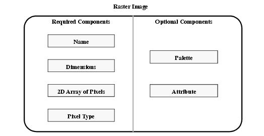
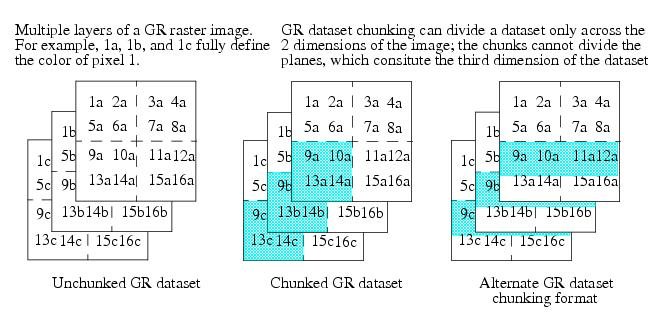
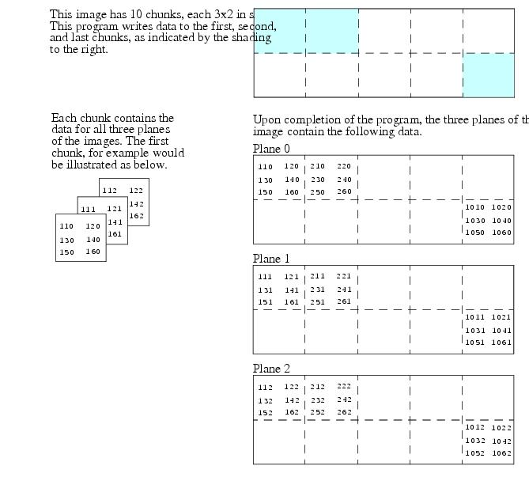
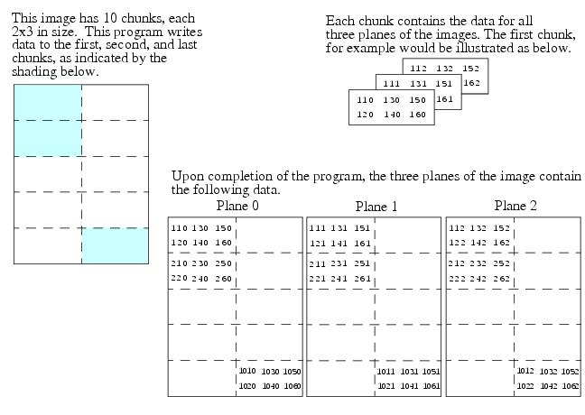

HDF User’s Guide
Version 4.2r4[Top] [Prev][Next]
|
|
HDF User’s GuideVersion 4.2r4 |
[Top] [Prev][Next] |
Chapter 8 -- General Raster Images (GR API)
8.1 Chapter Overview
This chapter describes the general raster (GR) data model, the GR interface (also called the GR API), and the interface routines used to manipulate GR data objects. The GR data model is designed to provide a flexible means of manipulating raster images. In addition to the GR interface, HDF provides two interfaces for manipulating raster data. The DFR8 interface works with 8-bit raster images and is described in Chapter 6, 8-Bit Raster Images (DFR8 API). The DF24 interface is designed for 24-bit raster images and is described in Chapter 7, 24-bit Raster Images (DF24 API).
8.2 The GR Data Model
HDF users familiar with the SD interface will find certain aspects of the GR data model similar to the SD data model. The interfaces are similar in that both interfaces support data storage in multiple files, attributes, compression, and chunking. They are dissimilar in that palettes can be created and attached to an image through GR interface routines, customized dimension information is not supported in the GR interface, and GR dataset chunking is constrained to two dimensions.
FIGURE 8a GR Data Set ContentsThe terms GR data set, raster image, and image are used interchangeably in this chapter.
Refer to Figure 8a on page 273 for a graphical overview of the raster image, or GR data set, structure. Note that GR data sets consist of required and optional components.
8.2.1 Required GR Data Set Components
Every GR data set must contain the following components: image array, name, pixel type, and dimensions. The name, dimensions, and pixel type must be supplied by the user at the time the GR data set is defined.
Image Array
An image array is a two-dimensional array of pixels. This is the primary data component of the GR model and will be discussed later in this section; it can be compressed, chunked, and/or stored in external files. Refer to Section 8.6.2 on page 289 for a description of raster image compression and Section 8.6.3 on page 290 for a description of external image storage.
A raster image has an index and a reference number associated with it. The index is a non-negative integer that describes the relative position of the raster image in the file. A valid index ranges from 0 to the total number of images in the file minus 1. The reference number is a unique positive integer assigned to the raster image by the GR interface when the image is created. Various GR interface routines can be used to obtain an image index or reference number depending on the available information about the raster image. The index can also be determined if the sequence in which the images are created in the file is known.
In the GR interface, a raster image identifier uniquely identifies a raster image within the file. The identifier is generated by the GR interface access routines when a new GR data set is created or an existing one is selected. The identifier is then used by other GR interface routines to access the raster image until the access to this image is terminated. For an existing raster image, the index of the image can be used to obtain the identifier.
Image Array Name
Each image array has a name consisting of a string of case-sensitive alphanumeric characters. The name must be provided by the calling program at the time the image is created, and cannot be changed afterward. Image array names do not have to be unique within a file, but if they are not it can be difficult to distinguish among the raster images in the file.
Pixels and Pixel Type
Each element in an image array corresponds to one pixel and each pixel can consist of a number of color component values or pixel components, e.g., Red-Green-Blue or RGB, Cyan-Magenta-Yellow-Black or CMYK, etc. Pixel components can be represented by different methods (8-bit lookup table or 24-bit direct representation, graphically depicted by Figure 6a on page 239 and Figure 7b on page 258, respectively) and may have different data types.
The data type of pixel components and the number of components in each pixel are collectively known as the pixel type. The GR data model supports all of the HDF-supported data types. A list of these data types appears provided in Table 2F on page 14.
Pixels can be composed of any number of components.
Dimensions
Image array dimensions specify the shape of the image array. A raster image array has two limited dimensions. The size of each dimension must be specified at the creation of the image and must be greater than 0.
The GR library does not allow the HDF user to add attributes to a dimension or to set dimension scale.
8.2.2 Optional GR Data Set Components
There are two types of optional components available for inclusion in a GR data set: palettes and attributes. These components are only created when specifically requested by the calling program; the GR interface does not provide predefined palettes or attributes.
Palettes
Palettes are lookup tables attached to images and define a set of color values for each pixel value in the image array. The GR interface provides similar capabilities for storing and manipulating palettes as the DFP interface described in Chapter 9, Palettes (DFP API). However, the DFP interface is restricted to single-file operations while the GR interface allows multifile palette operations.
Eventually, all palette manipulation functionality will reside only within the GR interface. In the meantime, the single-file DFP routines are fully compatible with palettes created with the GR palette routines. The GR palette routines are described in Section 8.11 on page 314.
Attributes
Attributes contain auxiliary information about a file, a raster image, or both. The concept of attributes is described in Chapter 3, Scientific Data Sets (SD API).
The GR interface does not support dimension attributes.
8.3 The GR Interface
The GR consists of routines for storing, retrieving, and manipulating the data in GR data sets.
8.3.1 GR Interface Routines
All C routine names in the GR interface have the prefix GR and the equivalent FORTRAN-77 routine names are prefaced by mg. All GR routines are classifiable within one of the following categories:
- Access routines initialize and terminate access to the GR interface and raster images.
- Raster image manipulation routines modify the data and metadata contained in a GR data set.
- LUT manipulation routines modify the palettes, also called color lookup tables or LUTs, contained in a GR data set.
- Maintenance routines create the data and metadata contained in a GR data set and modify global settings governing the format of the stored data.
- Inquiry routines return information about data contained in a GR data set.
- Chunking routines are used to define data chunking parameters, to retrieve chunking information, and to write and read chunked GR data sets.
The GR routines are listed in the following table and described further in subsequent sections of this chapter.
TABLE 8A GR Library Routines
8.4 Header Files Required by the GR Interface
The header file "hdf.h" must be included in any program that utilizes GR interface routines.8.5 Programming Model for the GR Interface
As with the SD interface, the GR interface relies on the calling program to initiate and terminate access to files and data sets to support multifile access. The GR programming model for accessing a raster image is as follows:
To access a single raster image data set in an HDF file, the calling program must contain the following calls:
C: file_id = Hopen(filename, access_mode, n_dds_block);
gr_id = GRstart(file_id);
ri_id = GRselect(gr_id, ri_index);
OR ri_id = GRcreate(gr_id, name, n_comps, data_type, interlace_mode, dim_sizes);
<Optional operations>
status = GRendaccess(ri_id);
status = GRend(gr_id);
status = Hclose(file_id);
FORTRAN: file_id = hopen(filename, access_mode, n_dds_block)
gr_id = mgstart(file_id)
ri_id = mgselct(gr_id, ri_index)
OR ri_id = mgcreat(gr_id, name, n_comps, data_type, interlace_mode, dim_sizes)
<Optional operations>
status = mgendac(ri_id)
status = mgend(gr_id)
status = hclose(file_id)
To access several files at the same time, a calling program must obtain a separate interface identifier for each file to be opened. Similarly, to access more than one raster image, a calling program must obtain a separate data set identifier for each data set.
Because every file and raster image is assigned its own identifier, the order in which files and data sets are accessed is very flexible as long as all file and raster image identifiers are individually discarded before the end of the calling program.
8.5.1 Accessing Images and Files: GRstart, GRselect, and GRcreate
In the GR interface, Hopen opens the files and GRstart initiates the GR interface. Note the contrast to the SD interface, where SDstart performs both tasks. For information on the use of Hopen, refer to Chapter 2, HDF Fundamentals. For information on SDstart, refer to Chapter 3, Scientific Data Sets (SD API).
GRstart initializes the GR interface and must be called once after Hopen and before any other GR routines are called. It takes one argument, file_id, the file identifier returned by Hopen, and returns the interface identifier gr_id or
FAIL(or-1) upon unsuccessful completion. Hopen and GRstart can be called several times to access more than one file.GRselect specifies the given image as the current image to be accessed. It takes two arguments, the GR interface identifier gr_id and the raster image index ri_index, and returns the raster image identifier ri_id or
FAIL(or-1) upon unsuccessful completion. The GR interface identifier is returned by GRstart. The raster image index specifies the position of the image relative to the beginning of the file; it is zero-based, meaning that the index of the first image in the file is 0. The index of a raster image can be obtained from the image's name using the routine GRnametoindex or from the image's reference number using GRreftoindex. These routines are discussed in Section 8.9.4 on page 300 and Section 8.9.5 on page 300. The index value must be less than the total number of raster images in the file; that number can be obtained using GRfileinfo, described in Section 8.9.1 on page 298.The parameters for GRstart and GRselect are further defined in Table 8B on page 279.
GRcreate defines a new raster image using the arguments gr_id, name, n_comps, data_type, interlace_mode, and dim_sizes. Once a data set is created, you cannot change its name, data type, dimension, or number of components. GRcreate does not actually write the image to the file; this occurs only when GRendaccess is called. Thus, failing to call GRendaccess properly will cause a loss of data.
The buffer name contains the name of the image; it must not exceed
H4_MAX_GR_NAME(or256). The parameter n_comps specifies the number of pixel components in the raster image; it must have a value of at least 1. The parameter data_type specifies the data type of the image data; it can be any of the data types supported by the HDF library. The HDF supported data type are defined in the header file "hntdefs.h" and listed in Table 2F on page 14.The parameter interlace_mode specifies the interlacing in which the raster image is to be written; it can be set to either
MFGR_INTERLACE_PIXEL(or0),MFGR_INTERLACE_LINE(or1), orMFGR_INTERLACE_COMPONENT(or2). These definitions respectively correspond to pixel interlacing, line interlacing, and component interlacing. The first two interlacing modes are illustrated for the instance of 24-bit pixel representation in Figure 7c on page 259 of Chapter 7, 24-bit Raster Images (DF24 API). Component interlacing, as the name implies, describes interlacing raster data by color component. (Images created with the GR interface are actually written to disk in pixel interlace mode; any user-specified interlace mode is stored in the file with the image and the image is automatically converted to that mode when it is read with a GR interface function.)The parameter dim_sizes specifies the size of the two dimensions of the image. The dimension sizes must be specified; their values must be at least 1.
GRcreate returns the value of the raster image identifier if successful or
FAIL(or-1) otherwise. The parameters for GRstart, GRselect, and GRcreate are further defined in (See Table 8B.).8.5.2 Terminating Access to Images and Files: GRendaccess and GRend
GRendaccess disposes of the raster image identifier ri_id and terminates access to the data set initiated by the corresponding call to GRselect or GRcreate. The calling program must make one GRendaccess call for every GRselect or GRcreate call made during its execution. Failing to call GRendaccess for each call to GRselect or GRcreate may result in a loss of data.
GRend disposes of the GR interface identifier gr_id and terminates access to the GR interface initiated by the corresponding call to GRstart. The calling program must make one GRend call for every GRstart call made during its execution; failing to call GRend for each GRstart may result in a loss of data.
GRendaccess and GRend return
SUCCEED(or0) orFAIL(or-1). The parameters of these routines are further defined in Table 8B.Hclose terminates access to an HDF file and should only be called after GRend has been called properly. Refer to Chapter 2, HDF Fundamentals, for a description of Hclose.
TABLE 8B GRstart, GRselect, GRcreate, GRendaccess, and GRend, Parameter Lists8.6 Writing Raster Images
A raster image can be written partially or entirely. Partial writing includes writing to a contiguous region of the image and writing to selected locations in the image according to patterns defined by the user. This section describes the routine GRwriteimage and how it can write data to part of an image or to an entire image. The section also illustrates the concepts of compressing raster images and the use of external files to store image data.
8.6.1 Writing Raster Images: GRwriteimage
GRwriteimage is used to either completely or partially fill an image array.
Writing data to an image array involves the following steps:
The calling program must contain the following sequence of calls:
C: file_id = Hopen(filename, access_mode, num_dds_block);
gr_id = GRstart(file_id);
ri_id = GRselect(gr_id, ri_index);
OR ri_id = GRcreate(gr_id, name, n_comps, number_type, interlace_mode, dim_sizes);
status = GRwriteimage(ri_id, start, stride, edges, data);
status = GRendaccess(gr_id);
status = GRend(ri_id);
status = Hclose(file_id);
FORTRAN: file_id = hopen(filename, access_mode, num_dds_block)
gr_id = mgstart(file_id)
ri_id = mgselct(gr_id, ri_index);
OR ri_id = mgcreat(gr_id, name, n_comps, number_type, interlace_mode, dim_sizes);
status = mgwrimg(ri_id, start, stride, edges, data)
OR status = mgwrcmg(ri_id, start, stride, edges, data)
status = mgendac(ri_id)
status = mgend(gr_id)
status = hclose(file_id)
As with SD arrays, whole raster images, subsamples, and slabs can be written. The data to be written is defined by the values of the parameters start, stride, and edges, which correspond to the coordinate location of the data origin, number of values to be skipped along each dimension during write operation, and number of elements to be written along each dimension.
The array start specifies the starting location of the data to be written. Valid values of each element in the array start are
0to the size of the corresponding raster image dimension - 1. The first element of the array start specifies an offset from the beginning of the array data along the fastest-changing dimension, which is the second dimension in C and the first dimension in FORTRAN-77. The second element of the array start specifies an offset from the beginning of the array data along the second fastest-changing dimension, which is the first dimension in C and the second dimension in FORTRAN-77. For example, if the first value of the array start is 2 and the second value is 3, the starting location of the data to be written is at the fourth row and third column in C, and at the third row and fourth column in FORTRAN-77. Note that the correspondence between elements in the array start and the raster image dimensions in the GR interface is different from that in the SD interface. See Section 3.6 on page 56 on SDreaddata for an example of this.The array stride specifies the writing pattern along each dimension. For example, if one of the elements of the array stride is 1, then every element along the corresponding dimension of the array data will be written. If one of the elements of the stride array is 2, then every other element along the corresponding dimension of the array data will be written, and so on. The correspondence between elements of the array stride and the dimensions of the array data is the same as described above for the array start.
Note that the FORTRAN-77 version of GRwriteimage has two routines; mgwrimg writes buffered numeric data and mgwcimg writes buffered character data.
GRwriteimage returns either
SUCCEED(or0) orFAIL(or-1). The parameters for GRwriteimage are described in Table 8C.TABLE 8C GRwriteimage Parameter ListEXAMPLE 1. Creating and Writing a Raster ImageThis example illustrates the use of the routines Hopen/hopen, GRstart/mgstart, GRcreate/mgcreat, GRwriteimage/mgwrimg, GRendaccess/mgendac, GRend/mgend, and Hclose/hclose to create an HDF file and store a raster image in it.
In this example, the program creates the HDF file called "General_RImages.hdf" and a raster image in the file. The image created is of size 5x10 and named "Image Array 1", and has data of the int16 data type, 2 components, and interlace mode
MFGR_INTERLACE_PIXEL. Then the program writes the image data, terminates access to the image and the GR interface, and closes the file.C:#include "hdf.h" #define FILE_NAME "General_RImages.hdf" #define IMAGE_NAME "Image Array 1" #define X_LENGTH 10 /* number of columns in the image */ #define Y_LENGTH 5 /* number of rows in the image */ #define N_COMPS 2 /* number of components in the image */ main( ) { /************************* Variable declaration **************************/ intn status; /* status for functions returning an intn */ int32 file_id, /* HDF file identifier */ gr_id, /* GR interface identifier */ ri_id, /* raster image identifier */ start[2], /* start position to write for each dimension */ edges[2], /* number of elements to be written along each dimension */ dim_sizes[2], /* dimension sizes of the image array */ interlace_mode, /* interlace mode of the image */ data_type, /* data type of the image data */ i, j; int16 image_buf[Y_LENGTH][X_LENGTH][N_COMPS]; /********************** End of variable declaration **********************/ /* * Create and open the file. */ file_id = Hopen (FILE_NAME, DFACC_CREATE, 0); /* * Initialize the GR interface. */ gr_id = GRstart (file_id); /* * Set the data type, interlace mode, and dimensions of the image. */ data_type = DFNT_INT16; interlace_mode = MFGR_INTERLACE_PIXEL; dim_sizes[0] = X_LENGTH; dim_sizes[1] = Y_LENGTH; /* * Create the raster image array. */ ri_id = GRcreate (gr_id, IMAGE_NAME, N_COMPS, data_type, interlace_mode, dim_sizes); /* * Fill the image data buffer with values. */ for (i = 0; i < Y_LENGTH; i++) { for (j = 0; j < X_LENGTH; j++) { image_buf[i][j][0] = (i + j) + 1; /* first component */ image_buf[i][j][1] = (i + j) + 1; /* second component */ } } /* * Define the size of the data to be written, i.e., start from the origin * and go as long as the length of each dimension. */ start[0] = start[1] = 0; edges[0] = X_LENGTH; edges[1] = Y_LENGTH; /* * Write the data in the buffer into the image array. */ status = GRwriteimage(ri_id, start, NULL, edges, (VOIDP)image_buf); /* * Terminate access to the raster image and to the GR interface and, * close the HDF file. */ status = GRendaccess (ri_id); status = GRend (gr_id); status = Hclose (file_id); }FORTRAN:program create_raster_image implicit none C C Parameter declaration C character*19 FILE_NAME character*13 IMAGE_NAME integer X_LENGTH integer Y_LENGTH integer N_COMPS C parameter (FILE_NAME = 'General_RImages.hdf', + IMAGE_NAME = 'Image Array 1', + X_LENGTH = 10, + Y_LENGTH = 5, + N_COMPS = 2) integer DFACC_CREATE, DFNT_INT16, MFGR_INTERLACE_PIXEL parameter (DFACC_CREATE = 4, + DFNT_INT16 = 22, + MFGR_INTERLACE_PIXEL = 0) C C Function declaration C integer hopen, hclose integer mgstart, mgcreat, mgwrimg, mgendac, mgend C C**** Variable declaration ******************************************* C integer status integer file_id integer gr_id, ri_id, num_type, interlace_mode integer start(2), stride(2), edges(2), dimsizes(2) integer i, j, k integer*2 image_buf(N_COMPS, X_LENGTH, Y_LENGTH) C C**** End of variable declaration ************************************ C C C Create and open the file. C file_id = hopen(FILE_NAME, DFACC_CREATE, 0) C C Initialize the GR interface. C gr_id = mgstart(file_id) C C Set the number type, interlace mode, and dimensions of the image. C num_type = DFNT_INT16 interlace_mode = MFGR_INTERLACE_PIXEL dimsizes(1) = X_LENGTH dimsizes(2) = Y_lENGTH C C Create the raster image array. C ri_id = mgcreat(gr_id, IMAGE_NAME, N_COMPS, num_type, + interlace_mode, dimsizes) C C Fill the image data buffer with values. C do 30 i = 1, Y_LENGTH do 20 j = 1, X_LENGTH do 10 k = 1, N_COMPS image_buf(k,j,i) = (i+j) - 1 10 continue 20 continue 30 continue C C Define the size of the data to be written, i.e., start from the origin C and go as long as the length of each dimension. C start(1) = 0 start(2) = 0 edges(1) = X_LENGTH edges(2) = Y_LENGTH stride(1) = 1 stride(2) = 1 C C Write the data in the buffer into the image array. C status = mgwrimg(ri_id, start, stride, edges, image_buf) C C Terminate access to the raster image and to the GR interface, C and close the HDF file. C status = mgendac(ri_id) status = mgend(gr_id) status = hclose(file_id) endEXAMPLE 2. Modifying an Existing Raster ImageThis example illustrates the use of the routines GRselect/mgselct to obtain an existing raster image and GRwrite/mgwrimg to modify image data.
In this example, the program selects the only raster image in the file "General_RImages.hdf" created and written in Example 1, and modifies image data. The program also creates another raster image that is named "Image Array 2" and has 3 components with dimension size of 4x6, data type of
DFNT_CHAR8, and interlace mode ofMFGR_INTERLACE_PIXEL.C:#include "hdf.h" #define FILE_NAME "General_RImages.hdf" #define X1_LENGTH 5 /* number of columns in the first image being modified */ #define Y1_LENGTH 2 /* number of rows in the first image being modified */ #define N1_COMPS 2 /* number of components in the first image */ #define IMAGE1_NAME "Image Array 1" #define IMAGE2_NAME "Image Array 2" #define X2_LENGTH 6 /* number of columns in the second image */ #define Y2_LENGTH 4 /* number of rows in the second image */ #define N2_COMPS 3 /* number of components in the second image */ main( ) { /************************* Variable declaration **************************/ intn status; /* status for functions returning an intn */ int32 file_id, /* HDF file identifier */ gr_id, /* GR interface identifier */ ri1_id, /* raster image identifier */ start1[2], /* start position to write for each dimension */ edges1[2], /* number of elements to be written along each dimension */ ri2_id, /* raster image identifier */ start2[2], /* start position to write for each dimension */ edges2[2], /* number of elements to be written along each dimension */ dims_sizes[2], /* sizes of the two dimensions of the image array */ data_type, /* data type of the image data */ interlace_mode; /* interlace mode of the image */ int16 i, j; /* indices for the dimensions */ int16 image1_buf[Y1_LENGTH][X1_LENGTH][N1_COMPS]; /* data of first image */ char image2_buf[Y2_LENGTH][X2_LENGTH][N2_COMPS]; /* data of second image*/ /********************** End of variable declaration **********************/ /* * Open the HDF file for writing. */ file_id = Hopen (FILE_NAME, DFACC_WRITE, 0); /* * Initialize the GR interface. */ gr_id = GRstart (file_id); /* * Select the first raster image in the file. */ ri1_id = GRselect (gr_id, 0); /* * Fill the first image data buffer with values. */ for (i = 0; i < Y1_LENGTH; i++) { for (j = 0; j < X1_LENGTH; j++) { image1_buf[i][j][0] = 0; /* first component */ image1_buf[i][j][1] = 0; /* second component */ } } /* * Define the size of the data to be written, i.e., start from the origin * and go as long as the length of each dimension. */ start1[0] = start1[1] = 0; edges1[0] = X1_LENGTH; edges1[1] = Y1_LENGTH; /* * Write the data in the buffer into the image array. */ status = GRwriteimage (ri1_id, start1, NULL, edges1, (VOIDP)image1_buf); /* * Set the interlace mode and dimensions of the second image. */ data_type = DFNT_CHAR8; interlace_mode = MFGR_INTERLACE_PIXEL; dims_sizes[0] = X2_LENGTH; dims_sizes[1] = Y2_LENGTH; /* * Create the second image in the file. */ ri2_id = GRcreate (gr_id, IMAGE2_NAME, N2_COMPS, data_type, interlace_mode, dims_sizes); /* * Fill the second image data buffer with values. */ for (i = 0; i < Y2_LENGTH; i++) { for (j = 0; j < X2_LENGTH; j++) { image2_buf[i][j][0] = 'A'; /* first component */ image2_buf[i][j][1] = 'B'; /* second component */ image2_buf[i][j][2] = 'C'; /* third component */ } } /* * Define the size of the data to be written, i.e., start from the origin * and go as long as the length of each dimension. */ for (i = 0; i < 2; i++) { start2[i] = 0; edges2[i] = dims_sizes[i]; } /* * Write the data in the buffer into the second image array. */ status = GRwriteimage (ri2_id, start2, NULL, edges2, (VOIDP)image2_buf); /* * Terminate access to the raster images and to the GR interface, and * close the HDF file. */ status = GRendaccess (ri1_id); status = GRendaccess (ri2_id); status = GRend (gr_id); status = Hclose (file_id); }FORTRAN:program modify_image implicit none C C Parameter declaration C character*19 FILE_NAME character*13 IMAGE1_NAME integer X1_LENGTH integer Y1_LENGTH integer N1_COMPS character*13 IMAGE2_NAME integer X2_LENGTH integer Y2_LENGTH integer N2_COMPS C parameter (FILE_NAME = 'General_RImages.hdf', + IMAGE1_NAME = 'Image Array 1', + IMAGE2_NAME = 'Image Array 2', + X1_LENGTH = 5, + Y1_LENGTH = 2, + N1_COMPS = 2, + X2_LENGTH = 6, + Y2_LENGTH = 4, + N2_COMPS = 3) integer DFACC_WRITE, DFNT_INT16, DFNT_CHAR8, + MFGR_INTERLACE_PIXEL parameter (DFACC_WRITE = 2, + DFNT_CHAR8 = 4, + DFNT_INT16 = 22, + MFGR_INTERLACE_PIXEL = 0) C C Function declaration C integer hopen, hclose integer mgstart, mgselct, mgcreat, mgwrimg, mgendac, mgend C C**** Variable declaration ******************************************* C integer status integer file_id integer gr_id, ri1_id, ri2_id, data_type, interlace_mode integer start1(2), stride1(2), edges1(2) integer start2(2), stride2(2), edges2(2), dim_sizes(2) integer i, j, k integer*2 image1_buf(N1_COMPS, X1_LENGTH, Y1_LENGTH) character image2_buf(N2_COMPS, X2_LENGTH, Y2_LENGTH) C C**** End of variable declaration ************************************ C C C Open the HDF file for writing. C file_id = hopen(FILE_NAME, DFACC_WRITE, 0) C C Initialize the GR interface. C gr_id = mgstart(file_id) C C Select the first raster image in the file. C ri1_id = mgselct(gr_id, 0) C C Fill the buffer with values. C do 20 i = 1, Y1_LENGTH do 10 j = 1, X1_LENGTH image1_buf(1,j,i) = 0 image1_buf(2,j,i) = 0 10 continue 20 continue C C Define the part of the data in the first image that will be overwritten C with the new values from image1_buf. C start1(1) = 0 start1(2) = 0 edges1(1) = X1_LENGTH edges1(2) = Y1_LENGTH stride1(1) = 1 stride1(2) = 1 C C Write the data in the buffer into the image array. C status = mgwrimg(ri1_id, start1, stride1, edges1, image1_buf) C C Set the number type, interlace mode, and dimensions of the second image. C data_type = DFNT_CHAR8 interlace_mode = MFGR_INTERLACE_PIXEL dim_sizes(1) = X2_LENGTH dim_sizes(2) = Y2_LENGTH C C Create the second image in the file. C ri2_id = mgcreat(gr_id, IMAGE2_NAME, N2_COMPS, data_type, + interlace_mode, dim_sizes) C C Fill the image data buffer with values. C do 60 i = 1, Y2_LENGTH do 50 j = 1, X2_LENGTH do 40 k = 1, N2_COMPS image2_buf(k,j,i) = char(65 + k - 1) 40 continue 50 continue 60 continue C C Define the size of the data to be written, i.e., start from the origin C and go as long as the length of each dimension. C start2(1) = 0 start2(2) = 0 edges2(1) = dim_sizes(1) edges2(2) = dim_sizes(2) stride2(1) = 1 stride2(2) = 1 C C Write the data in the buffer into the image array. C status = mgwrimg(ri2_id, start2, stride2, edges2, image2_buf) C C Terminate access to the raster images and to the GR interface, C and close the HDF file. C status = mgendac(ri1_id) status = mgendac(ri2_id) status = mgend(gr_id) status = hclose(file_id) end8.6.2 Compressing Raster Images: GRsetcompress
Images can be compressed using the routine GRsetcompress. GRsetcompress compresses the image data at the time it is called and supports all standard HDF compression algorithms. The syntax of the routine GRsetcompress is as follows:
The compression method is specified by the parameter comp_type. Valid values of the parameter comp_type are:
COMP_CODE_NONE(or0) for no compressionCOMP_CODE_RLE(or1) for RLE run-length encodingCOMP_CODE_SKPHUFF(or3) for Skipping Huffman compressionCOMP_CODE_DEFLATE(or4) for GZIP compressionCOMP_CODE_SZIP(or5) for Szip compression (not for Fortran)COMP_CODE_JPEG(or7) for JPEG compressionThe compression parameters are specified by the parameter c_info in C and the parameter comp_prm in FORTRAN-77. The parameter c_info has type comp_info and contains algorithm-specific information for the library compression routines. The type comp_info is described in the header file
hcomp.hand in the reference manual page for SDsetcompress. Compression parameters are only needed when Skipping Huffman, GZIP, and Szip compression methods are applied.If comp_type is set to
COMP_CODE_NONEorCOMP_CODE_RLE, the parameters c_info and comp_prm are not used; c_info can be set toNULLand comp_prm can be undefined.If comp_type is set to
COMP_CODE_SKPHUFF, then the structure skphuff in the union comp_info in C (comp_prm(1) in FORTRAN-77) must be provided with the size, in bytes, of the data elements.If comp_type is set to
COMP_CODE_DEFLATE, the deflate structure in the union comp_info in C (comp_prm(1) in FORTRAN-77) must be provided with the information about the compression effort.Note that, as of HDF4.2r2, Szip is not supported in Fortran GR interface yet.
GRsetcompress returns either
SUCCEED(or0) orFAIL(or-1). The GRsetcompress parameters are further described in Table 8D.TABLE 8D GRsetcompress Parameter List8.6.3 External File Operations Using the GR Interface
An external image array is one that is stored in a file that is not the file containing the metadata for the image. The HDF file containing the metadata is known as the primary HDF file; the file containing the external image array is known as an external file. The concept of externally stored data is described in Chapter 3, Scientific Data Sets (SD API). The GR interface supports the same external file functionality as the SD interface.
8.6.3.1 Creating a Raster Image in an External File: GRsetexternalfile
Creating an image with the data stored in an external file involves the same general steps as with the SD interface:
To create a data set containing image array stored in an external file, the calling program must make the following calls.
C: ri_id = GRcreate(gr_id, name, n_comps, data_type, interlace_mode, dim_sizes);
status = GRsetexternalfile(ri_id, filename, offset);
status = GRwriteimage(ri_id, start, stride, edges, image_data);
status = GRendaccess(ri_id);
FORTRAN: ri_id = mgcreat(gr_id, name, n_comps, data_type, interlace_mode, dim_sizes)
status = mgsxfil(ri_id, filename, offset)
status = mgwrimg(ri_id, start, stride, edges, image_data)
status = mgendac(ri_id)
GRsetexternalfile marks the image identified by the parameter ri_id as one whose data is to be written to an external file. The parameter filename is the name of the external file, and the parameter offset specifies the number of bytes from the beginning of the external file to the location where the first byte of data will be written.
GRsetexternalfile can only be called once per data set. If a file with the same name as filename exists in the current directory, HDF will use it as the external file. If the file does not exist, HDF will create one. Once the name of the external file is specified, it is impossible to change it without breaking the association between the raster image and its data.
Use caution when writing to existing files because the routine GRwriteimage begins its write at the specified offset without checking whether existing data is being overwritten. When different data sets have arrays being stored the same external file, the calling program is responsible for avoiding any overlap between them.
GRsetexternalfile returns either
SUCCEED(or0) orFAIL(or-1). The parameters of GRsetexternalfile are further defined in Table 8E.TABLE 8E GRsetexternalfile Parameter List8.6.3.2 Moving Raster Images to an External File
Images can be moved from the primary HDF file to an external file. To do so requires the following steps:
The calling program must make the following calls:
When GRsetexternalfile is used in conjunction with GRselect, it will immediately write the existing data to the external file; any data in the external file that occupies the space reserved for the external array will be overwritten as a result of this operation. A data set can only be moved to an external file once.
During the operation, the data is written to the external file as a contiguous stream regardless of how it is stored in the primary file. Because data is moved "as is," any unwritten locations in the data set are preserved in the external file. Subsequent read and write operations performed on the data set will access the external file.
8.7 Reading Raster Images
Image array data can be read as an entire array or as a subsample of the array. Raster image data is read from an external file in the same way that it is read from a primary file; whether the image array is stored in an external file is transparent to the user. This section describes how GRreadimage is used to read an entire image and part of an image. The section also describes the routine GRreqimageil that sets the interlacing for reading image data.
8.7.1 Reading Data from an Image: GRreadimage
Reading data subsamples from an image array involves the following steps:
To read data from an image array, the calling program must contain the following function calls:
GRreadimage can be used to read either an entire image or a subsample of the image. The ri_id argument is the raster image identifier returned by GRselect. As with GRwriteimage, the arguments start, stride, and edges respectively describe the starting location for the read operation, the number of locations the current image array location will be moved forward after each read, and the length of each dimension to be read. Refer to Section 8.6.1 on page 280 for detailed descriptions of the parameters start, stride, and edges. If the image array is smaller than the data argument array, the amount of data read will be limited to the maximum size of the image array.
Note that the FORTRAN-77 version of GRreadimage has two routines; mgrdimg reads numeric image data and mgrcimg reads character image data.
GRreadimage returns either
SUCCEED(or0) orFAIL(or-1). The parameters for GRreadimage are further defined in (See Table 8F.).8.7.2 Setting the Interlace Mode for an Image Read: GRreqimageil
The GRreqimageil routine sets the interlace mode for the next image read. The syntax of this routine is as follows:
GRreqimageil can be called at any time before the read operation and takes two parameters, ri_id and interlace_mode. The parameter ri_id is the raster image identifier returned by the GRselect routine and the parameter interlace_mode specifies the interlace mode that will be in effect for the image read operation. Refer to Section 8.5.1 on page 278 for a description of the GR interlace modes.
GRreqimagetil may be called more than once; the interlace mode setting specified by the last call to the routine will be used for the next read operation.
GRreqimagetil returns either
SUCCEED(or0) orFAIL(or-1). The parameters of this routine are further defined in Table 8F.TABLE 8F GRreadimage and GRreqimageil Parameter ListsEXAMPLE 3. Reading a Raster Image.This example illustrates the use of the routine GRreadimage/mgrdimg to read an image and its subsets.
In this example, the program reads the image written by Example 1 and modified by Example 2 in the file "General_RImages.hdf". Recall that this image has two components and has 5 rows and 10 columns. The program first reads the entire image, then reads a subset of the image, 3 rows and 2 columns starting at the 2nd row and the 4th column, and finally reads the image skipping all the even rows and all the odd columns. Reading patterns are applied to all components.
C:#include "hdf.h" #define FILE_NAME "General_RImages.hdf" #define N_COMPS 2 #define X_LENGTH 10 /* number of columns of the entire image */ #define Y_LENGTH 5 /* number of rows of the entire image */ #define PART_COLS 2 /* number of columns read for partial image */ #define PART_ROWS 3 /* number of rows read for partial image */ #define SKIP_COLS 5 /* number of columns read for skipped image */ #define SKIP_ROWS 3 /* number of rows read for skipped image */ #define COLS_PART_START 3 /* starting column to read partial image */ #define ROWS_PART_START 1 /* starting row to read partial image */ #define COLS_SKIP_START 1 /* starting column to read skipped image */ #define ROWS_SKIP_START 0 /* starting row to read skipped image */ #define N_STRIDES 2 /* number of elements to skip on each dim. */ main( ) { /************************* Variable declaration **************************/ intn status; /* status for functions returning an intn */ int32 index; int32 file_id, gr_id, ri_id, start[2], /* start position to write for each dimension */ edges[2], /* number of elements to bewritten along each dimension */ stride[2], /* number of elements to skip on each dimension */ dim_sizes[2]; /* dimension sizes of the image array */ int16 entire_image[Y_LENGTH][X_LENGTH][N_COMPS], partial_image[PART_ROWS][PART_COLS][N_COMPS], skipped_image[SKIP_ROWS][SKIP_COLS][N_COMPS]; int32 i, j; /********************** End of variable declaration **********************/ /* * Open the HDF file for reading. */ file_id = Hopen (FILE_NAME, DFACC_READ, 0); /* * Initialize the GR interface. */ gr_id = GRstart (file_id); /* * Select the first raster image in the file. */ ri_id = GRselect (gr_id, 0); /* * Define the size of the data to be read, i.e., start from the origin * and go as long as the length of each dimension. */ start[0] = start[1] = 0; edges[0] = X_LENGTH; edges[1] = Y_LENGTH; /* * Read the data from the raster image array. */ status = GRreadimage (ri_id, start, NULL, edges, (VOIDP)entire_image); /* * Display only the first component of the image since the two components * have the same data in this example. */ printf ("First component of the entire image:\n"); for (i = 0; i < Y_LENGTH; i++) { for (j = 0; j < X_LENGTH; j++) printf ("%d ", entire_image[i][j][0]); printf ("\n"); } /* * Define the size of the data to be read. */ start[0] = COLS_PART_START; start[1] = ROWS_PART_START; edges[0] = PART_COLS; edges[1] = PART_ROWS; /* * Read a subset of the raster image array. */ status = GRreadimage (ri_id, start, NULL, edges, (VOIDP)partial_image); /* * Display the first component of the read sample. */ printf ("\nThree rows & two cols at 2nd row and 4th column"); printf (" of the first component:\n"); for (i = 0; i < PART_ROWS; i++) { for (j = 0; j < PART_COLS; j++) printf ("%d ", partial_image[i][j][0]); printf ("\n"); } /* * Define the size and the pattern to read the data. */ start[0] = COLS_SKIP_START; start[1] = ROWS_SKIP_START; edges[0] = SKIP_COLS; edges[1] = SKIP_ROWS; stride[0] = stride[1] = N_STRIDES; /* * Read all the odd rows and even columns of the image. */ status = GRreadimage (ri_id, start, stride, edges, (VOIDP)skipped_image); /* * Display the first component of the read sample. */ printf ("\nAll odd rows and even columns of the first component:\n"); for (i = 0; i < SKIP_ROWS; i++) { for (j = 0; j < SKIP_COLS; j++) printf ("%d ", skipped_image[i][j][0]); printf ("\n"); } /* * Terminate access to the raster image and to the GR interface, and * close the HDF file. */ status = GRendaccess (ri_id); status = GRend (gr_id); status = Hclose (file_id); }FORTRAN:program read_raster_image implicit none C C Parameter declaration C character*19 FILE_NAME integer X_LENGTH integer Y_LENGTH integer N_COMPS C parameter (FILE_NAME = 'General_RImages.hdf', + X_LENGTH = 10, + Y_LENGTH = 5, + N_COMPS = 2) integer PART_COLS, PART_ROWS, SKIP_COLS, SKIP_ROWS integer COLS_PART_START, ROWS_PART_START integer COLS_SKIP_START, ROWS_SKIP_START integer N_STRIDES parameter (PART_COLS = 3, PART_ROWS = 2, + SKIP_COLS = 3, SKIP_ROWS = 5, + COLS_PART_START = 1, ROWS_PART_START = 3, + COLS_SKIP_START = 0, ROWS_SKIP_START = 1, + N_STRIDES = 2) integer DFACC_READ parameter (DFACC_READ = 1) C C Function declaration C integer hopen, hclose integer mgstart, mgselct, mgrdimg, mgendac, mgend C C**** Variable declaration ******************************************* C integer status integer file_id integer gr_id, ri_id integer start(2), stride(2), edges(2) integer i, j integer*2 entire_image(N_COMPS, X_LENGTH, Y_LENGTH) integer*2 partial_image(N_COMPS, PART_ROWS, PART_COLS) integer*2 skipped_image(N_COMPS, SKIP_ROWS, SKIP_COLS) C C**** End of variable declaration ************************************ C C C Open the HDF file for reading. C file_id = hopen(FILE_NAME, DFACC_READ, 0) C C Initialize the GR interface. C gr_id = mgstart(file_id) C C Select the first raster image in the file. C ri_id = mgselct(gr_id, 0) C C Define the size of the data to be read, i.e., start from the origin C and go as long as the length of each dimension. C start(1) = 0 start(2) = 0 edges(1) = X_LENGTH edges(2) = Y_LENGTH stride(1) = 1 stride(2) = 1 C C Read the data from the raster image array. C status = mgrdimg(ri_id, start, stride, edges, entire_image) C C Display only the first component of the image since the two components C have the same data in this example. C write(*,*) 'First component of the entire image' write(*,*) do 10 i = 1, X_LENGTH write(*,1000) (entire_image(1,i,j), j = 1, Y_LENGTH) 10 continue write(*,*) C C Define the size of the data to be read. C start(1) = ROWS_PART_START start(2) = COLS_PART_START edges(1) = PART_ROWS edges(2) = PART_COLS stride(1) = 1 stride(2) = 1 C C Read a subset of the raster image array. C status = mgrdimg(ri_id, start, stride, edges, partial_image) C C Display only the first component of the read sample. C write(*,*) + 'Two rows and three columns at 4th row and 2nd column', + ' of the first component' write(*,*) do 20 i = 1, PART_ROWS write(*,1000) (partial_image(1,i,j), j = 1, PART_COLS) 20 continue write(*,*) C C Define the size and the pattern to read the data. C start(1) = ROWS_SKIP_START start(2) = COLS_SKIP_START edges(1) = SKIP_ROWS edges(2) = SKIP_COLS stride(1) = N_STRIDES stride(2) = N_STRIDES C C Read all the odd rows and even columns of the image. C status = mgrdimg(ri_id, start, stride, edges, skipped_image) C C Display only the first component of the read sample. C write(*,*) 'All even rows and odd columns of the first component' write(*,*) do 30 i = 1, SKIP_ROWS write(*,1000) (skipped_image(1,i,j), j = 1, SKIP_COLS) 30 continue write(*,*) C C Terminate access to the raster image and to the GR interface, C and close the HDF file. C status = mgendac(ri_id) status = mgend(gr_id) status = hclose(file_id) 1000 format(1x, 5(I4)) end8.8 Difference between the SD and GR Interfaces
There is a difference between the SD and GR interfaces that becomes important in applications or tools that must manipulate both images and two-dimensional SDs.
The SD and GR interfaces differ in the correspondence between the dimension order in parameter arrays such as start, stride, edge, and dimsizes and the dimension order in the data array. See the SDreaddata and GRreadimage reference manual pages for discussions of the SD and GR approaches, respectively.
When writing applications or tools to manipulate both images and two-dimensional SDs, this crucial difference between the interfaces must be taken into account. While the underlying data is stored in row-major order in both cases, the API parameters are not expressed in the same way. Consider the example of an SD data set and a GR image that are stored as identically-shaped arrays of X columns by Y rows and accessed via the SDreaddata and GRreadimage functions, respectively. Both functions take the parameters start, stride, and edge.
- For SDreaddata, those parameters are expressed in (y,x) or [row,column] order. For example,
start[0]is the starting point in the Y dimension andstart[1]is the starting point in the X dimension. The same ordering holds true for all SD data set manipulation functions.- For GRreadimage, those parameters are expressed in (x,y) or [column,row] order. For example,
start[0]is the starting point in the X dimension andstart[1]is the starting point in the Y dimension. The same ordering holds true for all GR functions manipulating image data.8.9 Obtaining Information about Files and Raster Images
The routines covered in this section provide methods for obtaining information about all of the images in a file, for identifying images that meet certain criteria, and for obtaining information about specific raster images.
GRfileinfo retrieves the number of images and file attributes in a file. GRgetiminfo provides information about individual images. To retrieve information about all images in a file, a calling program can use GRfileinfo to determine the number of images, followed by repeated calls to GRgetiminfo to obtain information about each image.
GRnametoindex or GRreftoindex can be used to obtain the index of a raster image in a file knowing its name or reference number, respectively. Refer to Section 8.2.1 on page 274 for a description of the raster image index and reference number. GRidtoref is used when the reference number of an image is required by another routine and the raster image identifier is available.
These routines are described individually in the following subsections.
8.9.1 Obtaining Information about the Contents of a File: GRfileinfo
GRfileinfo retrieves the number of raster images and the number of file attributes contained in a file. This information is often useful in index validation, sequential searches, or memory allocation. The syntax of GRfileinfo is as follows:
The number of images in the file and the total number of file attributes will be stored in the arguments n_images and n_file_attrs, respectively.
GRfileinfo returns
SUCCEED(or0) if successful orFAIL(or-1) otherwise. The parameters for GRfileinfo are further described in Table 8G on page 299.8.9.2 Obtaining Information about an Image: GRgetiminfo
It is impossible to allocate the proper amount of memory to buffer the image data when the number of components, dimension sizes, and/or data type of the image are unknown. The routine GRgetiminfo retrieves this required information. To access information about an image, the calling program must contain the following:
GRgetiminfo takes a raster image identifier as input, and returns the name, number of components, data type, interlace mode, dimension size, and number of attributes for the corresponding image in the arguments name, n_comps, data_type, interlace_mode, dim_sizes, and n_attrs respectively. The number of components of an image array element corresponds to the order of a vdata field, therefore this implementation of image components in the GR interface is flexible enough to accommodate any representation of pixel data. The calling program determines this representation; the GR interface recognizes only the raw byte configuration of the data. The attribute count will only reflect the number of attributes assigned to the image array; file attributes are not included.
GRgetiminfo returns either
SUCCEED(or0) orFAIL(or-1). The parameters of this routine are further defined in Table 8G.TABLE 8G GRfileinfo and GRgetiminfo Parameter Lists8.9.3 Obtaining the Reference Number of a Raster Image from Its Identifier: GRidtoref
GRidtoref returns either the reference number of the raster image identified by the parameter ri_id, or
FAIL(or-1) upon unsuccessful completion. The syntax of GRidtoref is as follows:This routine is further defined in Table 8H on page 301.
8.9.4 Obtaining the Index of a Raster Image from Its Reference Number: GRreftoindex
GRreftoindex returns either the index of the raster image specified by its reference number, ref, or
FAIL(or-1) upon unsuccessful completion. The syntax of GRreftoindex is as follows:This routine is further defined in Table 8H.
8.9.5 Obtaining the Index of a Raster Image from Its Name: GRnametoindex
GRnametoindex returns the index of the raster image specified by its name or
FAIL(or-1) upon unsuccessful completion. The syntax of GRnametoindex is as follows:This routine is further defined in Table 8H.
8.9.6 Obtaining Compression Information for a Raster Image: GRgetcompinfo
GRgetcompinfo retrieves the type of compression used to store a raster image and, when appropriate, the required compression parameters. GRgetcompinfo replaces GRgetcompress because this function has flaws, causing failure for some chunked and chunked/compressed data.
GRgetcompinfo takes one input parameter, ri_id, a raster image identifier, and two output parameters, comp_type, for the type of compression used when the image was written, and either c_info (a C struct) or comp_prm (a FORTRAN-77 array) for the returned compression parameters.
Valid comp_type values are as follows:
COMP_CODE_NONE (or 0) for no compressionCOMP_CODE_RLE (or 1) for RLE run-length encodingCOMP_CODE_SKPHUFF (or 3) for Skipping Huffman compressionCOMP_CODE_DEFLATE (or 4) for GZIP compressionCOMP_CODE_SZIP (or 5) for Szip compression (not for Fortran)COMP_CODE_JPEG (or 7) for JPEG compressionThe c_info struct is of type
comp_info, contains algorithm-specific information for the library compression routines, and is described in thehcomp.hheader file.The comp_prm parameter is an array of several elements.
For Skipping Huffman compression, comp_prm(1) contains the skip value,
skphuff_skp_size.For GZIP compression, comp_prm(1) contains the deflation value,
deflate_value.For other compression types, comp_prm is ignored. Currently, Szip is not yet supported in Fortran GR interface.
GRgetcompinfo returns
SUCCESS(or0) if it is successful orFAIL(or-1) upon unsuccessful completion.The syntax of GRgetcompinfo is as follows:
This routine is further defined in Table 8H.
TABLE 8H GRidtoref, GRreftoindex, GRnametoindex, and GRgetcompinfo Parameter ListsEXAMPLE 4. Obtaining File and Image Information.This example illustrates the use of the routines GRfileinfo/mgfinfo and GRgetiminfo/mggiinf to obtain information such as the number of images and attributes in an HDF file and the characteristics of a raster image in the file.
In this example, the program gets the number of images in the file using the routine GRfileinfo/mgfinfo. For each image, the program then obtains and displays its name, number of components, data type, interlace mode, dimension sizes, and number of attributes using the routine GRgetiminfo/mggiinf.
C:#include "hdf.h" #define FILE_NAME "General_RImages.hdf" main( ) { /************************* Variable declaration **************************/ intn status; /* status for functions returning an intn */ int32 file_id, gr_id, ri_id, n_rimages, /* number of raster images in the file */ n_file_attrs, /* number of file attributes */ ri_index, /* index of a image */ dim_sizes[2], /* dimensions of an image */ n_comps, /* number of components an image contains */ interlace_mode, /* interlace mode of an image */ data_type, /* number type of an image */ n_attrs; /* number of attributes belong to an image */ char name[MAX_GR_NAME], /* name of an image */ *type_string, /* mapped text of a number type */ *interlace_string; /* mapped text of an interlace mode */ /********************** End of variable declaration **********************/ /* * Open the file for reading. */ file_id = Hopen (FILE_NAME, DFACC_READ, 0); /* * Initialize the GR interface. */ gr_id = GRstart (file_id); /* * Determine the contents of the file. */ status = GRfileinfo (gr_id, &n_rimages, &n_file_attrs); /* * For each image in the file, get and display the image information. */ printf ("RI# Name Components Type Interlace \ Dimensions Attributes\n\n"); for (ri_index = 0; ri_index < n_rimages; ri_index++) { ri_id = GRselect (gr_id, ri_index); status = GRgetiminfo (ri_id, name, &n_comps, &data_type, &interlace_mode, dim_sizes, &n_attrs); /* * Map the number type and interlace mode into text strings for output * readability. Note that, in this example, only two possible types * are considered because of the simplicity of the example. For real * problems, all possible types should be checked and, if reading the * data is desired, the size of the type must be determined based on the * machine where the program resides. */ if (data_type == DFNT_CHAR8) type_string = "Char8"; else if (data_type == DFNT_INT16) type_string = "Int16"; else type_string = "Unknown"; switch (interlace_mode) { case MFGR_INTERLACE_PIXEL: interlace_string = "MFGR_INTERLACE_PIXEL"; break; case MFGR_INTERLACE_LINE: interlace_string = "MFGR_INTERLACE_LINE"; break; case MFGR_INTERLACE_COMPONENT: interlace_string = "MFGR_INTERLACE_COMPONENT"; break; default: interlace_string = "Unknown"; break; } /* switch */ /* * Display the image information for the current raster image. */ printf ("%d %s %d %s %s %2d,%2d %d\n", ri_index, name, n_comps, type_string, interlace_string, dim_sizes[0], dim_sizes[1], n_attrs); /* * Terminate access to the current raster image. */ status = GRendaccess (ri_id); } /* * Terminate access to the GR interface and close the HDF file. */ status = GRend (gr_id); status = Hclose (file_id); }FORTRAN:program image_info implicit none C C Parameter declaration C character*19 FILE_NAME C parameter (FILE_NAME = 'General_RImages.hdf') integer DFACC_READ parameter (DFACC_READ = 1) C C Function declaration C integer hopen, hclose integer mgstart, mgselct, mgfinfo, mggiinf, mgendac, mgend C C**** Variable declaration ******************************************* C integer status integer file_id, gr_id, ri_id integer n_rimages, n_file_attrs, ri_index integer n_comps, interlace_mode, n_attrs, data_type integer dim_sizes(2) character*10 type_string character*24 interlace_string character*64 name C C**** End of variable declaration ************************************ C C C Open the HDF file for reading. C file_id = hopen(FILE_NAME, DFACC_READ, 0) C C Initialize the GR interface. C gr_id = mgstart(file_id) C C Determine the contents of the file. C status = mgfinfo(gr_id, n_rimages, n_file_attrs) C C For each image in the file, get and display image information. C do 100 ri_index = 0, n_rimages-1 ri_id = mgselct(gr_id, ri_index) status = mggiinf(ri_id, name, n_comps, data_type, + interlace_mode, dim_sizes, n_attrs) C C Map the number type and interlace mode into text strings for C output readability. C if(data_type .eq. 4) then type_string = 'DFNT_CHAR8' else if(data_type .eq. 22) then type_string = 'DFNT_INT16' else type_string = 'Unknown' endif if (interlace_mode .eq. 0) then interlace_string = 'MFGR_INTERLACE_PIXEL' else if(interlace_mode .eq. 1) then interlace_string = 'MFGR_INTERLACE_LINE' else if(interlace_mode .eq. 2) then interlace_string = 'MFGR_INTERLACE_COMPONENT' else interlace_string = 'Unknown' endif C C Display the image information for the current image. C write(*,*) 'Image index: ', ri_index write(*,*) 'Image name: ', name write(*,*) 'Number of components: ', n_comps write(*,*) 'Number type: ', type_string write(*,*) 'Interlace mode: ', interlace_string write(*,*) 'Dimnesions: ', dim_sizes(1), dim_sizes(2) write(*,*) 'Number of image attributes: ', n_attrs write(*,*) C C Terminate access to the current raster image. C status = mgendac(ri_id) 100 continue C C Terminate access to the GR interface and close the HDF file. status = mgend(gr_id) status = hclose(file_id) end8.10 GR Data Set Attributes
The GR interface provides tools that attach attributes to particular images. This capability is similar to, though more limited than, attribute function capabilities of the SD interface. The concepts of user-defined and predefined attributes are explained in Chapter 3, Scientific Data Sets (SD API). The GR implementation of attributes is similar to the SD implementation. Attributes are not written out to a file until access to the object the attribute is attached to is terminated.
8.10.1 Predefined GR Attributes
The GR API library has only one predefined attribute:
FILL_ATTR. This attribute defines a fill pixel, which is analogous to a fill value in the SD interface. It represents the default value that is written to each element of an image array not explicitly written to by the calling program, i.e., when only a portion of the entire image array is filled with data. This value must of the same data type as the rest of the initialized image data. The routine used to set the fill value, GRsetattr, is explained in the next section.8.10.2 Setting User-defined Attributes: GRsetattr
GRsetattr creates or modifies an attribute for either a file or a raster image. If the attribute with the specified name does not exist, GRsetattr creates a new one. If the named attribute already exists, GRsetattr resets all the values that are different from those provided in its argument list. The syntax of GRsetattr is as follows:
The first argument, obj_id, can either be the GR interface identifier or raster image identifier. The argument attr_name contains the name of the attribute and can be no more than
H4_MAX_GR_NAME(or256) characters in length. Passing the name of an existing attribute will overwrite the value portion of that attribute.The arguments data_type, n_values, and attr_value describe the right side of the label=value equation. The attr_value argument contains one or more values of the same data type. The data_type argument describes the data type for all values in the attribute and n_values contains the total number of values in the attribute.
Note that the FORTRAN-77 version of GRsetattr has two routines; mgsnatt writes numeric attribute data and mgscatt writes character attribute data.
GRsetattr returns either
SUCCEED(or0) orFAIL(or-1). The parameters for GRsetattr are further described in Table 8I on page 310.EXAMPLE 5. Operations on File and Raster Image Attributes.This example illustrates the use of the routines GRsetattr/mgsnatt/mgscatt to assign attributes to an HDF file and to an image.
In this example, the program sets two attributes to the existing file "General_RImages.hdf" and two attributes to the image named "Image Array 2". The file is created by the program in Example 1 and the image is created by the program in Example 2. The values of the second attribute of the image are of type int16 and the values of the other three attributes are of type char8.
C:#include "hdf.h" #define FILE_NAME "General_RImages.hdf" #define IMAGE_NAME "Image Array 2" #define F_ATT1_NAME "File Attribute 1" #define F_ATT2_NAME "File Attribute 2" #define RI_ATT1_NAME "Image Attribute 1" #define RI_ATT2_NAME "Image Attribute 2" #define F_ATT1_VAL "Contents of First FILE Attribute" #define F_ATT2_VAL "Contents of Second FILE Attribute" #define F_ATT1_N_VALUES 32 #define F_ATT2_N_VALUES 33 #define RI_ATT1_VAL "Contents of IMAGE's First Attribute" #define RI_ATT1_N_VALUES 35 #define RI_ATT2_N_VALUES 6 main( ) { /************************* Variable declaration **************************/ intn status; /* status for functions returning an intn */ int32 gr_id, ri_id, file_id, ri_index; int16 ri_attr_2[RI_ATT2_N_VALUES] = {1, 2, 3, 4, 5, 6}; /********************** End of variable declaration **********************/ /* * Open the HDF file. */ file_id = Hopen (FILE_NAME, DFACC_WRITE, 0); /* * Initialize the GR interface. */ gr_id = GRstart (file_id); /* * Set two file attributes to the file with names, data types, numbers of * values, and values of the attributes specified. */ status = GRsetattr (gr_id, F_ATT1_NAME, DFNT_CHAR8, F_ATT1_N_VALUES, (VOIDP)F_ATT1_VAL); status = GRsetattr (gr_id, F_ATT2_NAME, DFNT_CHAR8, F_ATT2_N_VALUES, (VOIDP)F_ATT2_VAL); /* * Obtain the index of the image named IMAGE_NAME. */ ri_index = GRnametoindex (gr_id, IMAGE_NAME); /* * Obtain the identifier of this image. */ ri_id = GRselect (gr_id, ri_index); /* * Set two attributes to the image with names, data types, numbers of * values, and values of the attributes specified. */ status = GRsetattr (ri_id, RI_ATT1_NAME, DFNT_CHAR8, RI_ATT1_N_VALUES, (VOIDP)RI_ATT1_VAL); status = GRsetattr (ri_id, RI_ATT2_NAME, DFNT_INT16, RI_ATT2_N_VALUES, (VOIDP)ri_attr_2); /* * Terminate access to the image and to the GR interface, and close the * HDF file. */ status = GRendaccess (ri_id); status = GRend (gr_id); status = Hclose (file_id); }FORTRAN:program set_attribute implicit none C C Parameter declaration C character*19 FILE_NAME character*13 IMAGE_NAME character*16 F_ATT1_NAME character*16 F_ATT2_NAME character*17 RI_ATT1_NAME character*17 RI_ATT2_NAME character*32 F_ATT1_VAL character*33 F_ATT2_VAL integer F_ATT1_N_VALUES integer F_ATT2_N_VALUES character*35 RI_ATT1_VAL integer RI_ATT1_N_VALUES integer RI_ATT2_N_VALUES C parameter (FILE_NAME = 'General_RImages.hdf', + IMAGE_NAME = 'Image Array 2', + F_ATT1_NAME = 'File Attribute 1', + F_ATT2_NAME = 'File Attribute 2', + RI_ATT1_NAME = 'Image Attribute 1', + RI_ATT2_NAME = 'Image Attribute 2', + F_ATT1_VAL = 'Contents of First FILE Attribute', + F_ATT2_VAL = 'Contents of Second FILE Attribute', + F_ATT1_N_VALUES = 32, + F_ATT2_N_VALUES = 33, + RI_ATT1_VAL = 'Contents of IMAGE''s First Attribute', + RI_ATT1_N_VALUES = 35, + RI_ATT2_N_VALUES = 6) integer DFACC_WRITE, DFNT_INT16, DFNT_CHAR8 parameter (DFACC_WRITE = 2, + DFNT_CHAR8 = 4, + DFNT_INT16 = 22) C C Function declaration C integer hopen, hclose integer mgstart, mgscatt, mgsnatt , mgn2ndx, + mgselct, mgendac, mgend C C**** Variable declaration ******************************************* C integer status integer file_id, gr_id, ri_id, ri_index integer*2 ri_attr_2(RI_ATT2_N_VALUES) integer i do 10 i = 1, RI_ATT2_N_VALUES ri_attr_2(i) = i 10 continue C C**** End of variable declaration ************************************ C C C Open the HDF file. C file_id = hopen(FILE_NAME, DFACC_WRITE, 0) C C Initialize the GR interface. C gr_id = mgstart(file_id) C C Set two file attributes to the file with names, data type, numbers of C values, and values of attributes specified. C status = mgscatt(gr_id, F_ATT1_NAME, DFNT_CHAR8, + F_ATT1_N_VALUES, F_ATT1_VAL) status = mgscatt(gr_id, F_ATT2_NAME, DFNT_CHAR8, + F_ATT2_N_VALUES, F_ATT2_VAL) C C Obtain the index of the image named IMAGE_NAMR. C ri_index = mgn2ndx(gr_id, IMAGE_NAME) C C Obtain the identifier of this image. C ri_id = mgselct(gr_id, ri_index) C C Set two attributes of the image with names, data types, number of C values, and values of the attributes specified. C status = mgscatt(ri_id, RI_ATT1_NAME, DFNT_CHAR8, + RI_ATT1_N_VALUES, RI_ATT1_VAL) status = mgsnatt(ri_id, RI_ATT2_NAME, DFNT_INT16, + RI_ATT2_N_VALUES, ri_attr_2) C C Terminate access to the image and to the GR interface, C and close the HDF file. C status = mgendac(ri_id) status = mgend(gr_id) status = hclose(file_id) end8.10.3 Querying User-Defined Attributes: GRfindattr and GRattrinfo
Each attribute associated with an object has a unique attribute index, a value ranging from 0 to the total number of attributes attached to the object - 1. Given a GR interface or raster image identifier and an attribute name, GRfindattr will return a valid attribute index of the file or raster image attribute if the attribute exists. The attribute index can then be used to retrieve information about the attribute or its values. Given a GR interface or raster image identifier and a valid attribute index, GRattrinfo returns the name, data type, and number of values for the file or raster image attribute if the attribute exists.
The syntax for GRfindattr and GRattrinfo is as follows:
The parameter obj_id is either a GR interface identifier or a raster image identifier. The parameter attr_name specifies the name of the attribute. The parameter attr_index specifies the index of the attribute to be read. The attribute index is a zero-based integer and must be less than the total number of attributes assigned to the specified object. The parameter data_type specifies the data type of the attribute. And the parameter n_values specifies the number of attribute values.
GRfindattr returns the attribute index if successful and FAIL (or -1) otherwise. GRattrinfo returns SUCCEED (or 0) if successful and FAIL (or -1) otherwise. The parameters for GRfindattr and GRattrinfo are further described in Table 8I.
8.10.4 Reading User-defined Attributes: GRgetattr
GRgetattr reads the values of an attribute assigned to the object identified by the parameter obj_id. The syntax for GRgetattr is as follows:
The parameter obj_id is either a GR interface identifier or a raster image identifier. The parameter attr_index specifies the index of the attribute to be read. The attribute index is a zero-based integer and must be less than the total number of attributes assigned to the specified object.
It is assumed that the buffer values, allocated to hold the attribute values, is large enough to hold the data; if not, the data read will be truncated to the size of the buffer. The size of the buffer should be at least n_values*sizeof(data_type) bytes long. If an attribute contains multiple values, GRgetattr will return all of them. It is not possible to read a subset of values.
Note that the FORTRAN-77 version of GRgetattr has two routines; mggnatt reads numeric attribute data and mggcatt reads character attribute data.
GRgetattr returns SUCCEED (or 0) if successful and FAIL (or -1) otherwise. The parameters for GRgetattr are further described in Table 8I.
TABLE 8I GRsetattr, GRfindattr, GRattrinfo, and GRgetattr Parameter ListsEXAMPLE 6. Obtaining File and Image Attribute.This example illustrates the use of the routines GRattrinfo/mgatinf, GRfindattr/mgfndat, and GRgetattr/mggnatt/mggcatt to extract information and values of file and image attributes that were set by the program in Example 5.
In this example, the program gets the information about each file attribute, then extracts its values. The program then selects the second image in the file, finds the attribute named "Image Attribute 2", obtains the data type and the number of values in the attribute, and extracts its stored values.
C:#include "hdf.h" #define FILE_NAME "General_RImages.hdf" #define RI_ATTR_NAME "Image Attribute 2" main( ) { /************************* Variable declaration **************************/ intn status; /* status for functions returning an intn */ int32 gr_id, ri_id, file_id, f_att_index, /* index of file attributes */ ri_att_index, /* index of raster image attributes */ data_type, /* image data type */ n_values, /* number of values in an attribute */ value_index, /* index of values in an attribute */ n_rimages, /* number of raster images in the file */ n_file_attrs; /* number of file attributes */ char attr_name[MAX_GR_NAME]; /* buffer to hold the attribute name */ VOIDP data_buf; /* buffer to hold the attribute values */ int16 *int_ptr; /* int16 pointer to point to a void data buffer */ char8 *char_ptr; /* char8 pointer to point to a void data buffer */ /********************** End of variable declaration **********************/ /* * Open the HDF file. */ file_id = Hopen (FILE_NAME, DFACC_READ, 0); /* * Initialize the GR interface. */ gr_id = GRstart (file_id); /* * Determine the number of attributes in the file. */ status = GRfileinfo (gr_id, &n_rimages, &n_file_attrs); if (status != FAIL && n_file_attrs > 0) { for (f_att_index = 0; f_att_index < n_file_attrs; f_att_index++) { /* * Get information about the current file attribute. */ status = GRattrinfo (gr_id, f_att_index, attr_name, &data_type, &n_values); /* * Allocate a buffer to hold the file attribute data. In this example, * knowledge about the data type is assumed to be available from * the previous example for simplicity. In reality, the size * of the type must be determined based on the machine where the * program resides. */ if (data_type == DFNT_CHAR8) { data_buf = malloc (n_values * sizeof (char8)); if (data_buf == NULL) { printf ("Unable to allocate space for attribute data.\n"); exit (1); } } else { printf ("Unable to determine data type to allocate data buffer.\n"); exit (1); } /* * Read and display the attribute values. */ status = GRgetattr (gr_id, f_att_index, (VOIDP)data_buf); char_ptr = (char8 *) data_buf; printf ("Attribute %s: ", attr_name); for (value_index = 0; value_index < n_values; value_index++) printf ("%c", char_ptr[value_index]); printf ("\n"); /* * Free the space allocated for the data buffer. */ free (data_buf); } /* for */ } /* if */ /* * Select the second image in the file. */ ri_id = GRselect (gr_id, 1); /* * Find the image attribute named RI_ATTR_NAME. */ ri_att_index = GRfindattr (ri_id, RI_ATTR_NAME); /* * Get information about the attribute. */ status = GRattrinfo (ri_id, ri_att_index, attr_name, &data_type, &n_values); /* * Allocate a buffer to hold the file attribute data. As mentioned above, * knowledge about the data type is assumed to be available from * the previous example for simplicity. In reality, the size of the * type must be determined based on the machine where the program resides. */ if (data_type == DFNT_INT16) data_buf = malloc (n_values * sizeof (int16)); /* * Read and display the attribute values. */ status = GRgetattr (ri_id, ri_att_index, (VOIDP)data_buf); printf ("\nAttribute %s: ", RI_ATTR_NAME); int_ptr = (int16 *)data_buf; for (value_index = 0; value_index < n_values; value_index++) printf ("%d ", int_ptr[value_index]); printf ("\n"); /* * Free the space allocated for the data buffer. */ free (data_buf); /* * Terminate access to the raster image and to the GR interface, and * close the file. */ status = GRendaccess (ri_id); status = GRend (gr_id); status = Hclose (file_id); }FORTRAN:program get_attribute implicit none C C Parameter declaration C character*19 FILE_NAME character*17 RI_ATTR_NAME C parameter (FILE_NAME = 'General_RImages.hdf', + RI_ATTR_NAME = 'Image Attribute 2') integer DFACC_READ, DFNT_INT16, DFNT_CHAR8 parameter (DFACC_READ = 1, + DFNT_CHAR8 = 4, + DFNT_INT16 = 22) C C Function declaration C integer hopen, hclose integer mgstart, mgfinfo, mgatinf, mggcatt, mggnatt , mgfndat, + mgselct, mgendac, mgend C C**** Variable declaration ******************************************* C integer status integer file_id, gr_id, ri_id integer f_att_index, ri_att_index, data_type, n_values integer n_rimages, n_file_attrs integer*2 int_buf(10) character*17 attr_name character*80 char_buf integer i C C**** End of variable declaration ************************************ C C C Open the HDF file. C file_id = hopen(FILE_NAME, DFACC_READ, 0) C C Initialize the GR interface. C gr_id = mgstart(file_id) C C Determine the number of attributes in the file. C status = mgfinfo(gr_id, n_rimages, n_file_attrs) if ((status .NE. -1) .AND. (n_file_attrs .GT. 0)) then do 10 f_att_index = 0, n_file_attrs-1 C C Get information about the current file attribute. C status = mgatinf(gr_id, f_att_index, attr_name, data_type, + n_values) C C Check whether data type is DFNT_CHAR8 in order to use allocated buffer. C if(data_type .NE. DFNT_CHAR8) then write(*,*) + 'Unable to determine data type to use allocated buffer' else C C Read and display the attribute values. C status = mggcatt(gr_id, f_att_index, char_buf) write(*,*) 'Attribute ', attr_name, ' : ', + char_buf(1:n_values) endif 10 continue endif C C Select the second image in the file. C ri_id = mgselct(gr_id, 1) C C Find the image attribute named RI_ATTR_NAME. C ri_att_index = mgfndat(ri_id, RI_ATTR_NAME) C C Get information about the attribute. C status = mgatinf(ri_id, ri_att_index, attr_name, data_type, + n_values) C C Read and display attribute values. C status = mggnatt(ri_id, ri_att_index, int_buf) write(*,*) 'Attributes :', (int_buf(i), i = 1, n_values) C C Terminate access to the image and to the GR interface, C and close the HDF file. C status = mgendac(ri_id) status = mgend(gr_id) status = hclose(file_id) end8.11 Reading and Writing Palette Data Using the GR Interface
The GR API library includes routines that read, write, and access information about palette data attached to GR images. Although this functionality is also provided by the HDF Palette API library, it is not a recommended practice to use the Palette API to access and manipulate palette objects created by GR interface routines.
The routines are named GRgetlutid, GRluttoref, GRgetlutinfo, GRwritelut, GRreqlutil, and GRreadlut. Note that the routine names use the term LUT to refer to palettes; LUT stands for color lookup tables.
8.11.1 Obtaining a Palette Identifier: GRgetlutid
Given a palette index, the routine GRgetlutid is used to get the palette identifier for the specified palette.
The GRgetlutid function takes two arguments, ri_id, the raster image identifier of the image that has the palette attached to it, and lut_index, the index of the palette, and returns the value of the palette identifier corresponding to the specified image. The syntax of GRgetlutid is as follows:
GRgetlutid returns the value of the palette identifier if successful and
FAIL(or-1) otherwise. The GRgetlutid parameters are further discussed in Table 8J.8.11.2 Obtaining the Number of Palettes Associated with an Image: GRgetnluts
Given an image identifier, GRgetnluts is used to determne the number of palettes currently associated with an image.
The GRgetnluts function takes one argument, ri_id, a raster image identifier, and returns the number of palettes associated with that imare. The syntax of GRgetnluts is as follows:
GRgetnluts returns the number of palettes associated with the identified image if successful and
FAIL(or-1) otherwise. The GRgetnluts parameters are further discussed in Table 8J.8.11.3 Obtaining the Reference Number of a Specified Palette: GRluttoref
Given a palette identifier, GRluttoref can be used to obtain the reference number of the specified palette.
The GRluttoref routine takes one argument, pal_id, a palette identifier, and returns the reference number of the palette. GRluttoref is commonly used to annotate the palette or to include the palette within a vgroup. The syntax of GRgetlutid is as follows:
GRluttoref returns the reference number of the palette if successful and
0otherwise. The GRluttoref parameters are further discussed in Table 8J.TABLE 8J GRgetlutid, GRgetlutinfo, and GRluttoref Parameter Lists8.11.4 Obtaining Palette Information: GRgetlutinfo
Given a palette identifier, GRgetlutinfo retrieves information about the palette and its components.
The GRgetlutinfo function takes one input argument, pal_id, the identifier of the palette, and several return parameters. The return parameters are n_comps, the number of components of the palette; data_type, the data type of the palette data; interlace_mode, the interlace mode of the stored palette data; and num_entries, the number of entries in the palette. The syntax of GRgetlutinfo is as follows:
GRgetlutinfo returns
SUCCEED(or0) if successful andFAIL(or-1) otherwise. The GRgetlutinfo parameters are further discussed in Table 8J.8.11.5 Writing Palette Data: GRwritelut
GRwritelut writes palette data into the palette identified by the parameter pal_id. The syntax of GRwritelut is as follows:
The parameter n_comps specifies the number of pixel components in the palette; it must have a value of at least 1. The parameter data_type specifies the data type of the palette data. Refer to Table 2F on page 14 for all data types supported by HDF.
The parameter interlace_mode specifies the interlacing in which the palette is to be written. The valid values of interlace_mode are:
MFGR_INTERLACE_PIXEL(or0),MFGR_INTERLACE_LINE(or1) andMFGR_INTERLACE_COMPONENT(or2). Refer to Section 8.5.1 on page 278 for further information.The parameter num_entries specifies the number of entries in the palette. The buffer pal_data contains the palette data.
Note that the FORTRAN-77 version of GRwritelut has two routines; mgwrlut writes buffered numeric palette data and mgwclut writes buffered character palette data.
GRwritelut returns either
SUCCEED(or0) orFAIL(or-1). The parameters of this routine are further defined in Table 8K on page 317.8.11.6 Setting the Interlace Mode for a Palette: GRreqlutil
GRreqlutil sets the interlace mode for the next palette to be read. The syntax of GRreqlutil is as follows:
The parameter interlace_mode specifies the interlacing that will be in effect for the next palette read operation. The valid values of interlace_mode are:
MFGR_INTERLACE_PIXEL(or0),MFGR_INTERLACE_LINE(or1) andMFGR_INTERLACE_COMPONENT(or2). Refer to Section 8.5.1 on page 278 for further information.GRreqlutil may be called at anytime before the read operation of the specified palette. In addition, it may be called more than once; the interlace mode setting specified by the last call to the routine will be used for the next read operation.
GRreqlutil returns either
SUCCEED(or0) orFAIL(or-1). The parameters of this routine are further defined in Table 8K on page 317.8.11.7 Reading Palette Data: GRreadlut
GRreadlut reads data from the palette identified by the parameter pal_id. The syntax of GRreadlut is as follows:
The read data will be stored in the buffer pal_data, which is assumed to be sufficient to store the read palette data. The sufficient amount of space needed can be determined using the routine GRgetlutinfo. The palette data is read according to the interlacing mode set by the last call to GRreqlutil.
Note that the FORTRAN-77 version of GRreadlut has two routines; mgrdlut reads numeric palette data and mgrclut reads character palette data.
GRreadlut returns either
SUCCEED(or0) orFAIL(or-1). The parameters of this routine are further defined in Table 8K.TABLE 8K GRgetlutid, GRwritelut, GRreqlutil, and GRreadlut Parameter ListsEXAMPLE 7. Writing a Palette.This example illustrates the use of the routines GRgetlutid/mggltid and GRwritelut/mgwclut to attach a palette to a raster image and write data to it.
In this example, the program creates an image named "Image with Palette" in the file "Image_with_Palette.hdf". A palette is then attached to the image and data is written to it.
C:#include "hdf.h" #define FILE_NAME "Image_with_Palette.hdf" #define NEW_IMAGE_NAME "Image with Palette" #define N_COMPS_IMG 2 /* number of image components */ #define X_LENGTH 5 #define Y_LENGTH 5 #define N_ENTRIES 256 /* number of entries in the palette */ #define N_COMPS_PAL 3 /* number of palette's components */ main( ) { /************************* Variable declaration **************************/ intn status, /* status for functions returning an intn */ i, j; int32 file_id, gr_id, ri_id, pal_id, interlace_mode, start[2], /* holds where to start to write for each dimension */ edges[2], /* holds how long to write for each dimension */ dim_sizes[2]; /* sizes of the two dimensions of the image array */ uint8 image_buf[Y_LENGTH][X_LENGTH][N_COMPS_IMG]; /* data of first image */ uint8 palette_buf[N_ENTRIES][N_COMPS_PAL]; /********************** End of variable declaration **********************/ /* * Open the HDF file. */ file_id = Hopen (FILE_NAME, DFACC_CREATE, 0); /* * Initialize the GR interface. */ gr_id = GRstart (file_id); /* * Define the dimensions and interlace mode of the image. */ dim_sizes[0] = X_LENGTH; dim_sizes[1] = Y_LENGTH; interlace_mode = MFGR_INTERLACE_PIXEL; /* * Create the image named NEW_IMAGE_NAME. */ ri_id = GRcreate (gr_id, NEW_IMAGE_NAME, N_COMPS_IMG, DFNT_UINT8, interlace_mode, dim_sizes); /* * Fill the image data buffer with values. */ for (i = 0; i < Y_LENGTH; i++) { for (j = 0; j < X_LENGTH; j++) { image_buf[i][j][0] = (i + j) + 1; image_buf[i][j][1] = (i + j) + 2; } } /* * Define the size of the data to be written, i.e., start from the origin * and go as long as the length of each dimension. */ start[0] = start[1] = 0; edges[0] = X_LENGTH; edges[1] = Y_LENGTH; /* * Write the data in the buffer into the image array. */ status = GRwriteimage (ri_id, start, NULL, edges, (VOIDP)image_buf); /* * Initialize the palette to grayscale. */ for (i = 0; i < N_ENTRIES; i++) { palette_buf[i][0] = i; palette_buf[i][1] = i; palette_buf[i][2] = i; } /* * Define palette interlace mode. */ interlace_mode = MFGR_INTERLACE_PIXEL; /* * Get the identifier of the palette attached to the image NEW_IMAGE_NAME. */ pal_id = GRgetlutid (ri_id, 0); /* * Write data to the palette. */ status = GRwritelut (pal_id, N_COMPS_PAL, DFNT_UINT8, interlace_mode, N_ENTRIES, (VOIDP)palette_buf); /* * Terminate access to the image and to the GR interface, and * close the HDF file. */ status = GRendaccess (ri_id); status = GRend (gr_id); status = Hclose (file_id); }FORTRAN:program write_palette implicit none C C Parameter declaration C character*22 FILE_NAME character*18 NEW_IMAGE_NAME integer X_LENGTH integer Y_LENGTH integer N_ENTRIES integer N_COMPS_IMG integer N_COMPS_PAL C parameter (FILE_NAME = 'Image_with_Palette.hdf', + NEW_IMAGE_NAME = 'Image with Palette', + X_LENGTH = 5, + Y_LENGTH = 5, + N_ENTRIES = 256, + N_COMPS_IMG = 2, + N_COMPS_PAL = 3) integer DFACC_CREATE, DFNT_CHAR8, DFNT_UINT8, MFGR_INTERLACE_PIXEL parameter (DFACC_CREATE = 4, + DFNT_CHAR8 = 4, + DFNT_UINT8 = 21, + MFGR_INTERLACE_PIXEL = 0) C C Function declaration C integer hopen, hclose integer mgstart, mgcreat, mgwcimg, mggltid, mgwclut, + mgendac, mgend C C**** Variable declaration ******************************************* C integer file_id, gr_id, ri_id, pal_id integer interlace_mode integer start(2), stride(2), edges(2), dim_sizes(2) integer status integer i, j character image_buf(N_COMPS_IMG, X_LENGTH, Y_LENGTH) character palette_buf(N_COMPS_PAL, N_ENTRIES) C C**** End of variable declaration ************************************ C C C Create and open the file. C file_id = hopen(FILE_NAME, DFACC_CREATE, 0) C C Initialize the GR interface. C gr_id = mgstart(file_id) C C Define interlace mode and dimensions of the image. C interlace_mode = MFGR_INTERLACE_PIXEL dim_sizes(1) = X_LENGTH dim_sizes(2) = Y_lENGTH C C Create the raster image array. C ri_id = mgcreat(gr_id, NEW_IMAGE_NAME, N_COMPS_IMG, DFNT_CHAR8, + interlace_mode, dim_sizes) C C Fill the image data buffer with values. C do 20 i = 1, Y_LENGTH do 10 j = 1, X_LENGTH image_buf(1,j,i) = char(i + j - 1 ) image_buf(2,j,i) = char(i + j) 10 continue 20 continue C C Define the size of the data to be written, i.e., start from the origin C and go as long as the length of each dimension. C start(1) = 0 start(2) = 0 edges(1) = X_LENGTH edges(2) = Y_LENGTH stride(1) = 1 stride(2) = 1 C C Write the data in the buffer into the image array. C status = mgwcimg(ri_id, start, stride, edges, image_buf) C C Initilaize the palette buffer to grayscale. C do 40 i = 1, N_ENTRIES do 30 j = 1, N_COMPS_PAL palette_buf(j,i) = char(i) 30 continue 40 continue C C Get the identifier of the palette attached to the image NEW_IMAGE_NAME. C pal_id = mggltid(ri_id, 0) C C Set palette interlace mode. C interlace_mode = MFGR_INTERLACE_PIXEL C C Write data to the palette. C status = mgwclut(pal_id, N_COMPS_PAL, DFNT_UINT8, interlace_mode, + N_ENTRIES, palette_buf) C C Terminate access to the raster image and to the GR interface, C and close the HDF file. C status = mgendac(ri_id) status = mgend(gr_id) status = hclose(file_id) endEXAMPLE 8. Reading a Palette.This example illustrates the use of the routines GRgetlutinfo/mgglinf and GRreadlut/mgrclut to obtain information about a palette and to read palette data.
In this example, the program finds and selects the image named "Image with Palette" in the file "Image_with_Palette.hdf". Then the program obtains information about the palette and reads the palette data.
C:#include "hdf.h" #define FILE_NAME "Image_with_Palette.hdf" #define IMAGE_NAME "Image with Palette" #define N_ENTRIES 256 /* number of elements of each color */ main( ) { /************************* Variable declaration **************************/ intn status, /* status for functions returning an intn */ i, j; int32 file_id, gr_id, ri_id, pal_id, ri_index; int32 data_type, n_comps, n_entries, interlace_mode; uint8 palette_data[N_ENTRIES][3]; /* static because of fixed size */ /************************* Variable declaration **************************/ /* * Open the file. */ file_id = Hopen (FILE_NAME, DFACC_READ, 0); /* * Initiate the GR interface. */ gr_id = GRstart (file_id); /* * Get the index of the image IMAGR_NAME. */ ri_index = GRnametoindex (gr_id, IMAGE_NAME); /* * Get image identifier. */ ri_id = GRselect (gr_id, ri_index); /* * Get the identifier of the palette attached to the image. */ pal_id = GRgetlutid (ri_id, ri_index); /* * Obtain and display information about the palette. */ status = GRgetlutinfo (pal_id, &n_comps, &data_type, &interlace_mode, &n_entries); printf ("Palette: %d components; %d entries\n", n_comps, n_entries); /* * Read the palette data. */ status = GRreadlut (pal_id, (VOIDP)palette_data); /* * Display the palette data. Recall that HDF supports only 256 colors. * Each color is defined by its 3 components. Therefore, * verifying the value of n_entries and n_comps is not necessary and * the buffer to hold the palette data can be static. However, * if more values or colors are added to the model, these parameters * must be checked to allocate sufficient space when reading a palette. */ printf (" Palette Data: \n"); for (i=0; i< n_entries; i++) { for (j = 0; j < n_comps; j++) printf ("%i ", palette_data[i][j]); printf ("\n"); } printf ("\n"); /* * Terminate access to the image and to the GR interface, and * close the HDF file. */ status = GRendaccess (ri_id); status = GRend (gr_id); status = Hclose (file_id); }FORTRAN:program read_palette implicit none C C Parameter declaration C character*22 FILE_NAME character*18 IMAGE_NAME integer N_ENTRIES integer N_COMPS_PAL C parameter (FILE_NAME = 'Image_with_Palette.hdf', + IMAGE_NAME = 'Image with Palette', + N_COMPS_PAL = 3, + N_ENTRIES = 256) integer DFACC_READ, DFNT_CHAR8, DFNT_UINT8, MFGR_INTERLACE_PIXEL parameter (DFACC_READ = 1, + DFNT_CHAR8 = 4, + DFNT_UINT8 = 21, + MFGR_INTERLACE_PIXEL = 0) C C Function declaration C integer hopen, hclose integer mgstart, mgn2ndx, mgselct, mggltid, mgglinf, + mgrclut, mgendac, mgend C C**** Variable declaration ******************************************* C integer file_id, gr_id, ri_id, ri_index, pal_id, pal_index integer interlace_mode integer data_type, n_comps, n_entries_out integer status integer i, j character palette_data(N_COMPS_PAL, N_ENTRIES) C C**** End of variable declaration ************************************ C C C Open the file. C file_id = hopen(FILE_NAME, DFACC_READ, 0) C C Initialize the GR interface. C gr_id = mgstart(file_id) C C Get the index of the image IMAGE_NAME. C ri_index = mgn2ndx(gr_id, IMAGE_NAME) C C Get the image identifier. C ri_id = mgselct(gr_id, 0) C C Get the identifier of the palette attached to the image. C pal_index = 0 pal_id = mggltid(ri_id, pal_index) C C Obtain information about the palette. C status = mgglinf(pal_id, n_comps, data_type, interlace_mode, + n_entries_out) write(*,*) ' Palette: ', n_comps, ' components; ', + n_entries_out, ' entries' C C Read the palette. C status = mgrclut(pal_id, palette_data) C C Display the palette data. C write(*,*) "Palette data" do 10 i = 1, n_entries_out write(*,*) (ichar(palette_data(j,i)), j = 1, n_comps) 10 continue C C Terminate access to the raster image and to the GR interface, C and close the HDF file. C status = mgendac(ri_id) status = mgend(gr_id) status = hclose(file_id) end8.12 Chunked Raster Images
The GR interface also supports chunking in a manner similar to that of the SD interface. There is one restriction on a raster image: it must be created with MFGR_INTERLACE_PIXEL (or
0) in the call to GRcreate. We refer the reader to Section 3.11 of Chapter 3, Scientific Data Sets (SD API), and to Chapter 14, HDF Performance Issues, for discussions of chunking concepts and performance related topics. The GR interface provides three routines, GRsetchunk, GRsetchunkcache, and GRgetchunkinfo, to create and maintain chunked raster images. The generic functions for reading and writing GR images, GRwriteimage and GRreadimage, will write and read chunked raster images as well. However, the GR interface provides special write and read routines, GRwritechunk and GRreadchunk, which are similar to SDwritechunk and SDreadchunk. Compared to GRwriteimage and GRreadimage, GRwritechunk and GRreadchunk are low-overhead but are only sutable for writing or reading complete chunks.8.12.1 Difference between a Chunked Raster Image and a Chunked SDS
Chunks of scientific datasets (SDSs) have the same dimensionality as the SDS itself and the chunks can divide the SDS along any dimension. While raster images under the GR interface are actually 3-dimensional arrays, 2 dimensions define the image while the third dimension (the stack of 2-dimensional image planes) provides the composite definition of the color at each pixel of the 2-dimensional image. Chunking can be applied only across the 2-dimensions of the image; chunking cannot divide the array across the third dimension. In other words, all of the elements of the raster image that define a single pixel must remain together in the same chunk.
FIGURE 8bChunks in a GR raster image dataset8.12.2 Making a Raster Image a Chunked Raster Image: GRsetchunk
GRsetchunk makes the raster image, identified by the parameter ri_id, a chunked raster image according to the provided chunking and compression information. The syntax of GRsetchunk is as follows:
The parameters c_def and flags in C or the parameters comp_type and comp_prm in FORTRAN-77 provide the chunking and compression information and are discussed below.
In C:
The parameter c_def is a union of type
HDF_CHUNK_DEF, which is defined as follows:typedef union hdf_chunk_def_u{int32 chunk_lengths[2]; /* chunk lengths along each dim */struct{int32 chunk_lengths[2];int32 comp_type; /* compression type */struct comp_info cinfo;} comp;struct{/* is not used in GR interface */} nbit;} HDF_CHUNK_DEFValid values of the parameter flags are
HDF_CHUNKfor chunked and uncompressed data and (HDF_CHUNK | HDF_COMP) for chunked and compressed data. Data can be compressed using run-length encoding (RLE), Skipping Huffman, GZIP, or Szip compression algorithms.If the parameter flags has a value of
HDF_CHUNK, the chunk dimensions must be specified in the fieldc_def.chunk_lengths[]. If the parameter flags has a value of (HDF_CHUNK | HDF_COMP), the chunk dimensions must be specified in the fieldc_def.comp.chunk_lengths[]and the compression type in the fieldc_def.comp.comp_type.Valid values of compression type values are:COMP_CODE_NONE(or0) for uncompressed dataCOMP_CODE_RLE(or1) for RLE compressionCOMP_CODE_SKPHUFF(or3) for Skipping Huffman compressionCOMP_CODE_DEFLATE(or4) for GZIP compressionCOMP_CODE_SZIP(or5) for Szip compressionFor Skipping Huffman, GZIP, and Szip compression methods, parameters are passed in corresponding fields of the structure cinfo. Specify skipping size for Skipping Huffman compression in the field
c_def.comp.cinfo.skphuff.skp_size; this value cannot be less than 1. Specify deflate level for GZIP compression in the fieldc_def.comp.cinfo.deflate_level. Valid values of deflate levels are integers from 0 to 9 inclusive. Specify the Szip options mask and the number of pixels per block in a chunked and Szip-compressed dataset in the fieldsc_info.szip.options_maskandc_info.szip.pixels_per_block, respectively.Refer to the discussion of SDsetcompress routine in Section 3.5.2 on page 47 for the definition of the structure comp_info.
In FORTRAN-77:
Chunk dimensions are specified in the array dim_length and the compression type in the parameter comp_type. Valid compression types and their values are defined in the
hdf.incfile and are listed below:COMP_CODE_NONE(or0) for uncompressed dataCOMP_CODE_RLE(or1) for RLE compressionCOMP_CODE_SKPHUFF(or3) for Skipping Huffman compressionCOMP_CODE_DEFLATE(or4) for GZIP compressionThe parameter comp_prm specifies the compression parameters for the Skipping Huffman and GZIP compression methods. It contains only one element which is set to the skipping size for Skipping Huffman compression or the deflate level for GZIP compression. Currently, Szip compression is not yet supported by Fortran GR interface.
GRsetchunk returns
SUCCEED(or0) if successful andFAIL(or-1) otherwise. The GRsetchunk parameters are discussed further in Table 8L on page 3358.12.3 Writing a Chunked Raster Image: GRwritechunk
GRwritechunk is used to write a chunk of a chunked raster image. The syntax of the GRwritechunk routine is as follows:
GRwritechunk writes the entire chunk of data stored in the buffer datap to the chunked raster image identified by the parameter ri_id. Writing starts at the location specified by the parameter origin. This function has less overhead than GRwriteimage and should be used whenever an entire chunk of data is to be written.
The raster image must be stored in pixel-interlace mode.
The parameter origin is a two-dimensional array which specifies the coordinates of the chunk according to the chunk position in the overall chunk array.
The datap buffer contains the chunk data. The data must be organized in pixel-interlace mode.
Note that the FORTRAN-77 version of GRwritechunk has two routines; mgwchnk writes buffered numeric data and mgwcchnk writes buffered character data.
GRwritechunk returns
SUCCEED(or0) if successful andFAIL(or-1) otherwise. The GRwritechunk parameters are discussed further in Table 8L.EXAMPLE 9. Creating and Writing a Chunked Raster ImageThis example illustrates the use of the routines Hopen/hopen, GRstart/mgstart, GRcreate/mgcreat, GRwritechunk/mgwchnk, GRendaccess/mgendac, GRend/mgend, and Hclose/hclose to create an HDF file and store a raster image in it.
In this example, the program creates an image of 6 rows by 10 columns in C and 10 rows by 6 columns in FORTRAN. The image is set up to be chunked with a chunk size of 3x2 in C and 2x3 in FORTRAN and compressed with the GZIP method. Three chunks are then written to the image. See Figure 8c through Figure 8d for illustrations.
FIGURE 8c Chunked GR image as writtenby C exampleFIGURE 8d Chunked GR image as writtenby FORTRAN exampleC:#include "hdf.h" #define FILE_NAME "gr_chunked.hdf" #define IMAGE_NAME "gzip_comp_data" #define X_LENGTH 6 /* number of rows in the image */ #define Y_LENGTH 10 /* number of columns in the image */ #define NCOMPS 3 /* number of components in the image */ main( ) { /************************* Variable declaration **************************/ intn status; /* status for functions returning an intn */ int32 file_id, /* HDF file identifier */ gr_id, /* GR interface identifier */ ri_id, /* raster image identifier */ dims[2], /* dimension sizes of the image array */ start[2], /* start position to write each chunk */ interlace_mode; /* interlace mode of the image */ HDF_CHUNK_DEF chunk_def; /* Chunk defintion set */ int32 chunk00[] = {110, 111, 112, 120, 121, 122, 130, 131, 132, 140, 141, 142, 150, 151, 152, 160, 161, 162 }; int32 chunk01[] = {210, 211, 212, 220, 221, 222, 230, 231, 232, 240, 241, 242, 250, 251, 252, 260, 261, 262 }; int32 chunk14[] = {1010, 1011, 1012, 1020, 1021, 1022, 1030, 1031, 1032, 1040, 1041, 1042, 1050, 1051, 1052, 1060, 1061, 1062 }; /********************** End of variable declaration **********************/ /* * Create and open the file. */ file_id = Hopen (FILE_NAME, DFACC_CREATE, 0); /* * Initialize the GR interface. */ gr_id = GRstart (file_id); /* * Set dimensions of the image. */ dims[0] = X_LENGTH; dims[1] = Y_LENGTH; /* * Create the raster image array. */ ri_id = GRcreate (gr_id, IMAGE_NAME, NCOMPS, DFNT_INT32, MFGR_INTERLACE_PIXEL, dims); /* * Define chunked image. */ chunk_def.comp.comp_type = COMP_CODE_DEFLATE; chunk_def.comp.cinfo.deflate.level = 6; chunk_def.comp.chunk_lengths[0] = 3; chunk_def.comp.chunk_lengths[1] = 2; status = GRsetchunk(ri_id, chunk_def, HDF_CHUNK | HDF_COMP); /* * Write first chunk (0,0). */ start[0] = 0; start[1] = 0; status = GRwritechunk(ri_id, start, (VOIDP)chunk00); /* * Write second chunk (0,1). */ start[0] = 0; start[1] = 1; status = GRwritechunk(ri_id, start, (VOIDP)chunk01); /* * Write third chunk (1,4). */ start[0] = 1; start[1] = 4; status = GRwritechunk(ri_id, start, (VOIDP)chunk14); /* * Terminate access to the raster image and to the GR interface and, * close the HDF file. */ status = GRendaccess (ri_id); status = GRend (gr_id); status = Hclose (file_id); }FORTRAN:program gr_chunking_example implicit none C C Parameter declaraction C character*14 FILE_NAME character*14 DATASET_NAME parameter (FILE_NAME = 'gr_chunked.hdf', . DATASET_NAME = 'gzip_comp_data') integer NCOMP, MFGR_INTERLACE_PIXEL parameter(NCOMP = 3, MFGR_INTERLACE_PIXEL = 0) integer DFACC_CREATE, DFACC_READ, DFACC_WRITE parameter (DFACC_CREATE = 4, . DFACC_READ = 1, . DFACC_WRITE = 2) integer DFNT_INT32 parameter (DFNT_INT32 = 24) integer X_LENGTH, Y_LENGTH, X_CH_LENGTH, Y_CH_LENGTH parameter (X_LENGTH = 6, . Y_LENGTH = 10, . X_CH_LENGTH = 3, . Y_CH_LENGTH = 2) C C Compression parameters. C integer COMP_CODE_DEFLATE, DEFLATE_LEVEL parameter( COMP_CODE_DEFLATE = 4, DEFLATE_LEVEL = 6) C C Function declaration. C integer mgstart, mgcreat, mgendac, mgend integer mgwchnk, mgschnk integer hopen, hclose C C**** Variable declaration ************************************************* C integer ri_id, gr_id, file_id integer dims(2), start(2) integer status, il integer comp_prm(1), comp_type C C Data buffers. C integer*4 chunk11(NCOMP* X_CH_LENGTH*Y_CH_LENGTH) integer*4 chunk21(NCOMP* X_CH_LENGTH*Y_CH_LENGTH) integer*4 chunk52(NCOMP* X_CH_LENGTH*Y_CH_LENGTH) C C Chunking dimension arrays C integer ch_dims(2) C C**** End of variable declaration ****************************************** C C C Data initialization C data chunk11 / 110, 111, 112, 120, 121, 122, . 130, 131, 132, 140, 141, 142, . 150, 151, 152, 160, 161, 162 . /, . chunk21 / . 210, 211, 212, 220, 221, 222, . 230, 231, 232, 240, 241, 242, . 250, 251, 252, 260, 261, 262 . /, . chunk52 / . 1010, 1011, 1012, 1020, 1021, 1022, . 1030, 1031, 1032, 1040, 1041, 1042, . 1050, 1051, 1052, 1060, 1061, 1062 . / C C Define chunk dimensions. C ch_dims(1) = Y_CH_LENGTH ch_dims(2) = X_CH_LENGTH C C Create and open the file and initiate GR interface.. C file_id = hopen(FILE_NAME, DFACC_CREATE, 0) gr_id = mgstart(file_id) C C Define the number of components and dimensions of the image. C il = MFGR_INTERLACE_PIXEL dims(1) = X_LENGTH dims(2) = Y_LENGTH C C Create GR dataset. C ri_id = mgcreat(gr_id, DATASET_NAME, NCOMP, DFNT_INT32, il, dims) C C Define chunked GR dataset using GZIP compression. C comp_prm(1) = DEFLATE_LEVEL comp_type = COMP_CODE_DEFLATE status = mgschnk (ri_id, ch_dims, comp_type, comp_prm) C C Define the location of the first chunk and write the data. C start(1) = 1 start(2) = 1 status = mgwchnk(ri_id, start, chunk11) C C Define the location of the second chunk and write the data. C start(1) = 2 start(2) = 1 status = mgwchnk(ri_id, start, chunk21) C C Define the location of the third and write the data. C start(1) = 5 start(2) = 2 status = mgwchnk(ri_id, start, chunk52) C C Terminate access to the array. C status = mgendac(ri_id) C C Terminate access to the GR interface. C status = mgend(gr_id) C C Close the file. C status = hclose(file_id) end8.12.4 Reading a Chunked Raster Image: GRreadchunk
GRreadchunk is used to read an entire chunk of data from a chunked raster image. The syntax of the GRreadchunk routine is as follows:
GRreadchunk reads the entire chunk of data stored from the chunked raster image identified by the parameter ri_id and stores it in the buffer datap. The chunk to be read is specified by the parameter origin. This function has less overhead than GRreadimage and should be used whenever an entire chunk of data is to be read.
The raster image must be stored in pixel-interlace mode.
The parameter origin is a two-dimensional array which specifies the coordinates of the chunk according to the chunk position in the overall chunk array.
The datap buffer contains the chunk data. The data is organized in pixel-interlace mode.
Note that the FORTRAN-77 version of GRreadchunk has two routines; mgrchnk reads numeric data and mgrcchnk reads character data to the buffer.
GRreadchunk returns
SUCCEED(or0) if successful andFAIL(or-1) otherwise. GRreadchunk will returnFAIL(or-1) when an attempt is made to read from a non-chunked image. The GRreadchunk parameters are discussed further in Table 8L.8.12.5 Obtaining Information about a Chunked Raster Image: GRgetchunkinfo
GRgetchunkinfo is used to determine whether a raster image is chunked and how chunking is defined. The syntax of the GRgetchunkinfo routine is as follows:
GRgetchunkinfo retrieves chunking information about the raster image into the parameters c_def and flag in C and into the parameters dim_length and flag in FORTRAN-77. Note that only chunk dimensions are retrieved; compression information is not available.
The value returned in the parameter flag indicates whether the raster image is not chunked, chunked, or chunked and compressed.
HDF_NONE(or-1) indicates that the raster image is not chunked.HDF_CHUNK(or0) indicates that the raster image is chunked and not compressed. (HDF_CHUNK | HDF_COMP) (or1) indicates that raster image is chunked and compressed with one of the allowed compression methods: RLE, Skipping Huffman, or GZIP.In C, if the raster image is chunked and not compressed, GRgetchunkinfo fills the array chunk_lengths in the union c_def with the values of the corresponding chunk dimensions. If the raster image is chunked and compressed, GRgetchunkinfo fills the array chunk_lengths in the structure comp of the union c_def with the values of the corresponding chunk dimensions. Refer to Section 8.12.2 on page 325 on GRsetchunk for specific information on the union
HDF_CHUNK_DEF. In C, if the chunk length for each dimension is not needed,NULLcan be passed in as the value of the parameter c_def.In FORTRAN-77, chunk dimensions are retrieved into the array dim_length.
GRgetchunkinfo returns
SUCCEED(or0) if successful andFAIL(or-1) otherwise. The GRgetchunkinfo parameters are discussed further in Table 8L.8.12.6 Setting the Maximum Number of Chunks in the Cache: GRsetchunkcache
GRsetchunkcache sets the maximum number of chunks to be cached for chunked raster image. GRsetchunkcache has similar behavior to SDsetchunkcache. Refer to Section 3.12.2 on page 115 for specific information. The syntax of GRsetchunkcache is as follows:
The maximum number of chunks is specified by the parameter maxcache. Currently, the only valid value of the parameter flags is
0.If GRsetchunkcache is not called, the maximum number of chunks in the cache is set to the number of chunks along the fastest-changing dimension. Since GRsetchunkcache is similar to the routine SDsetchunkcache, refer to Section 3.12.2 on page 115 for more detailed discussion of the routine's behavior.
GRsetchunkcache returns the value of the parameter maxcache if successful and
FAIL(or-1) otherwise. The GRsetchunkcache parameters are discussed further in Table 8L.TABLE 8L GRsetchunk, GRgetchunkinfo, GRsetchunkcache, GRwritechunk, and
GRreadchunk Parameter Lists
|
HDF4.2r4 - February 2009 Copyright |
The HDF Group www.hdfgroup.org |